<!doctype html>
<html lang="en">
<head>
  <meta charset="utf-8">
  <meta name="viewport" content="width=device-width, initial-scale=1">
  <title>arxiv digest — 2026-10-01</title>
  <style>
:root {
  --bg: #ffffff;
  --fg: #1f2328;
  --muted: #59636e;
  --border: #d0d7de;
  --card: #f6f8fa;
  --link: #0969da;
}
body {
  max-width: 980px;
  margin: 0 auto;
  padding: 2rem 1rem 5rem;
  font-family: -apple-system, BlinkMacSystemFont, "Segoe UI", Helvetica, Arial, sans-serif;
  line-height: 1.55;
  color: var(--fg);
  background: var(--bg);
}
a { color: var(--link); }
img { max-width: 100%; height: auto; }
pre, code { background: var(--card); border-radius: 6px; }
pre { padding: 1rem; overflow-x: auto; }
blockquote { border-left: 4px solid var(--border); padding-left: 1rem; color: var(--muted); }
details { margin: 0.6rem 0; }
summary { cursor: pointer; font-weight: 600; }
.paper-figures-scroll {
  display: flex;
  gap: 1rem;
  overflow-x: auto;
  overscroll-behavior-x: contain;
  padding: 0.75rem 0.25rem 1rem;
  margin: 1rem 0 1.25rem;
  border-top: 1px solid var(--border);
  border-bottom: 1px solid var(--border);
  scroll-snap-type: x proximity;
}
.paper-figure-card {
  flex: 0 0 min(260px, 72vw);
  scroll-snap-align: start;
  background: var(--card);
  border: 1px solid var(--border);
  border-radius: 12px;
  padding: 0.55rem;
}
.paper-figure-card img {
  display: block;
  width: 100%;
  max-height: 240px;
  object-fit: contain;
  background: white;
  border-radius: 8px;
}
.paper-figure-caption {
  display: block;
  margin-top: 0.5rem;
  color: var(--muted);
  font-size: 0.85rem;
}
.figure-strip-hint {
  color: var(--muted);
  font-size: 0.9rem;
  margin-bottom: -0.3rem;
}
</style>
  <!-- MathJax: renders $...$ inline math and $$...$$ display math, plus
       \(...\) and \[...\]. Loaded from the official CDN; works offline
       once cached. Configured to skip code/pre blocks so arxiv IDs that
       look like dollar amounts don't get mangled. -->
  <script>
    window.MathJax = {
      tex: {
        inlineMath: [['$', '$'], ['\\(', '\\)']],
        displayMath: [['$$', '$$'], ['\\[', '\\]']],
        processEscapes: true,
        processEnvironments: true
      },
      options: {
        skipHtmlTags: ['script', 'noscript', 'style', 'textarea', 'pre', 'code'],
        ignoreHtmlClass: 'tex2jax_ignore',
        processHtmlClass: 'tex2jax_process'
      }
    };
  </script>
  <script id="MathJax-script" async
    src="https://cdn.jsdelivr.net/npm/mathjax@3/es5/tex-chtml.js"></script>
</head>
<body>
<header style="background-color: #333; color: white; padding: 15px; margin-bottom: 20px;">
  <h1 style="margin: 0; font-size: 24px;">
    <a href="https://ochelpan.github.io/arXiv_clean/" style="color: white; text-decoration: none;">Main</a>
  </h1>
</header>

<h1>Daily arXiv Report</h1>

<hr>
<p>
<a href="index.html">← Index</a>
 · <a href="papers_06.html">← Previous</a> · <a href="papers_08.html">Next →</a>
</p>
<hr>

<h2>Papers 121–140</h2>
<p><a id="paper-2609.37194"></a></p>
<h3 id="non-canonical-quantum-otto-engine"><a href="http://arxiv.org/abs/2609.37194v1">Non-Canonical Quantum Otto Engine</a></h3>
<p><strong>Authors:</strong> Wei Wu, Jun-Hong An<br>
<strong>Type:</strong> theory · <strong>Category:</strong> statistical mechanics · <strong>PDF:</strong> <a href="https://arxiv.org/pdf/2609.37194v1">https://arxiv.org/pdf/2609.37194v1</a><br>
<strong>Analysis basis:</strong> full PDF text, analyzed in chunks
<strong>Topic relevance:</strong> <code>Keldysh / 2PI / non-Gaussian methods</code> <strong>1/5</strong> · <code>correlated / nonlocal dissipation</code> <strong>1/5</strong> · <code>driven-dissipative phase transition</code> <strong>1/5</strong> · <code>methods for driven-dissipative</code> <strong>1/5</strong> · <code>non-equilibrium universality</code> <strong>1/5</strong></p>
<div class="figure-strip-hint">↔ Scroll figures horizontally</div>
<div class="paper-figures-scroll">
<figure class="paper-figure-card">
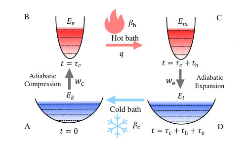
<figcaption class="paper-figure-caption"><b>Fig 1.</b> FIG. 1. Diagrammatic sketch of the quantum Otto cycle.</figcaption>
</figure>
<figure class="paper-figure-card">
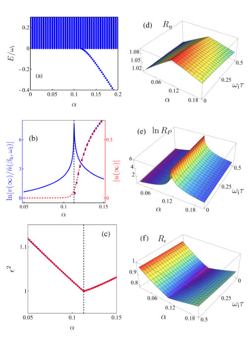
<figcaption class="paper-figure-caption"><b>Fig 2.</b> FIG. 2. (a) Energy spectrum of the total system consisting of the working substance and the hot bath. (b) v(∞)/¯n(βh, ωf) (blue line) and |u(∞)| (red dashed line) are plotted as the functions of α. The purple rectangles are analytical results |u(∞)| = Z. (c) ϵ2 versus α. The red rectangles are numer- ical results with ωiτ = 100, while the blue solid line is the adiabatic result of ϵ2 adi = 1+1/v(∞). (d) Rη ≡⟨η⟩/⟨ηBM⟩(e) RP ≡⟨P⟩/⟨PBM⟩and (f) Rϵ ≡ϵ/ϵM as the functions of the cycle time τ and the coupling constant α. We use ωf = 2ωi, βc = 5ω−1 i , βh = 0.1ω−1 i , s = 0.5, and ωc = 10ωi.</figcaption>
</figure>
<figure class="paper-figure-card">
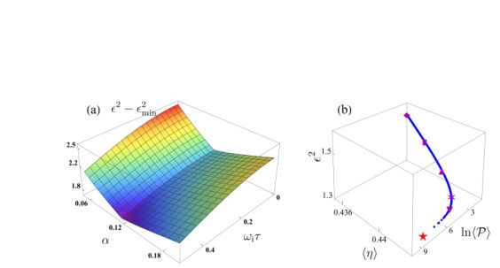
<figcaption class="paper-figure-caption"><b>Fig 3.</b> FIG. 3. (a) ϵ2 −ϵ2 text is plotted as the functions of τ and α. (b) Trade-off relation among the power ⟨P⟩, the efficiency ⟨η⟩, and the fluctuation ϵ with ωiτ = 1. Different blue points correspond to different coupling strengths. Six representative data are displayed separately: α = 0.05 (diamond), α = 0.07 (rectangle), α = 0.09 (up-triangle), α = 0.12 (down-triangle), α = 0.13 (six-pointed star) and α = 0.1128 (red five-pointed star), which is the critical coupling strength at which the bound state forms. Other parameters are the same as those in Fig. 2.</figcaption>
</figure>
</div>

<p><strong>Summary.</strong> This paper analyzes a quantum Otto engine, focusing on how non-Markovian thermalization affects its performance statistics. By moving beyond the standard Born-Markov approximation, the authors show that engineering the system's energy spectrum near a quantum critical point allows for the simultaneous enhancement of efficiency and power while reducing fluctuations. This suggests a new pathway for designing stable and highly efficient quantum energy devices.</p>
<p><strong>Why it may be interesting.</strong> This work provides a deep theoretical understanding of how non-Markovian quantum dynamics can enhance the performance metrics (efficiency, power) and stability (reduced variance) of fundamental thermodynamic engines, which is crucial for quantum energy technology.</p>
<details>
<summary>Detailed structure</summary>
<p><strong>Main problem.</strong> The study investigates the non-canonical effects on the statistical properties (average values and variances) of efficiency and power in a finite-time quantum Otto cycle, moving beyond the limitations of standard canonical thermalization assumptions.</p>
<p><strong>Main result.</strong> The average efficiency and power can be simultaneously boosted while decreasing their variances by engineering the energy spectrum structure, particularly near a quantum critical point induced by a bound state formation.</p>
<p><strong>Method.</strong> The authors use characteristic functions and detailed derivations of expectation values ($\langle W 
angle, \langle Q 
angle, \langle W^2 
angle$) to compare exact non-Markovian results against the standard Born-Markov approximations.</p>
<p><strong>Model / system.</strong> The model is a quantum Otto engine where the working substance is treated as a quantum harmonic oscillator coupled to hot and cold thermal baths. The dynamics are governed by master equations and quantum Langevin equations.</p>
<p><strong>Key observables.</strong> Average efficiency ($\langle \eta 
angle$), average power ($\langle P 
angle$), and their respective variances ($\epsilon^2_\eta, \epsilon^2_P$).</p>
<p><strong>Important parameters / regimes.</strong> The energy spectrum structure, the proximity to a quantum critical point, and the coupling strength (non-Markovian vs. Born-Markov regime).</p>
<p><strong>Assumptions / limitations.</strong> The analysis explicitly contrasts the non-Markovian regime with the Born-Markov approximation, which is assumed to break down under strong coupling.</p>
<p><strong>Figures summary.</strong> Figures illustrate the quantum Otto cycle diagram, the energy spectrum showing bound states, and plots comparing fluctuation ($\epsilon^2$) and the trade-off relation between $\langle P
angle$, $\langle\eta
angle$, and $\epsilon$ across different time scales.</p>
<p><strong>Paper structure.</strong> The paper progresses by defining the system and cycle, deriving the necessary statistical tools (characteristic functions, expectation values), comparing exact non-Markovian results to the Born-Markov benchmark, and finally analyzing the optimal conditions near quantum criticality.</p>
</details>
<details>
<summary>Abstract</summary>
<p>The fast-developing quantum technology is propelling thermal machine, which lies at the heart of thermodynamics, into a new golden era. Being stochastic because of the non-negligible thermal and quantum fluctuations, the efficiency and power of a finite-time quantum heat engine exhibit a trade-off, preventing the simultaneous achievement of high power and high efficiency. Conventional studies treat the statistics of a heat engine by assuming canonical thermalization, which is valid only under weak-coupling conditions. We here investigate the noncanonical effect on the statistics of the efficiency and power for a finite-time quantum Otto cycle. It is revealed that their average values and variances are highly controllable by engineering the energy spectrum structure of the composite system consisting of the working substance and the bath. Near the quantum critical point induced by the formation of a bound state in the energy spectrum, the average efficiency and power can be boosted simultaneously, meanwhile, both of their variances are decreased. Deepening our understanding of the usefulness of quantum reservoir engineering in thermodynamics, our result lays the foundation for the realization of efficient and stable quantum energy devices.</p>
</details>
<p><sub><a href="#top">↑ back to top</a></sub></p>

<p><a id="paper-2609.37596"></a></p>
<h3 id="semiclassical-spin-bath-calculation-of-the-nitrogen-isotope-effect-on-nvmath1128math-ensemble-coherence-in-diamond"><a href="http://arxiv.org/abs/2609.37596v1">Semiclassical spin-bath calculation of the nitrogen-isotope effect on NV$^-$ ensemble coherence in diamond</a></h3>
<p><strong>Authors:</strong> Chikara Shinei<br>
<strong>Type:</strong> theory · <strong>Category:</strong> other · <strong>PDF:</strong> <a href="https://arxiv.org/pdf/2609.37596v1">https://arxiv.org/pdf/2609.37596v1</a><br>
<strong>Analysis basis:</strong> full PDF text, analyzed in chunks
<strong>Topic relevance:</strong> <code>Keldysh / 2PI / non-Gaussian methods</code> <strong>1/5</strong> · <code>QC/QI experiment</code> <strong>1/5</strong> · <code>correlated / nonlocal dissipation</code> <strong>1/5</strong> · <code>methods for driven-dissipative</code> <strong>1/5</strong> · <code>quantum measurements</code> <strong>1/5</strong></p>
<div class="figure-strip-hint">↔ Scroll figures horizontally</div>
<div class="paper-figures-scroll">
<figure class="paper-figure-card">
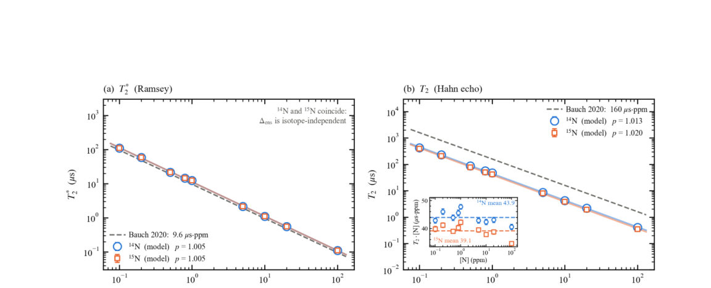
<figcaption class="paper-figure-caption"><b>Fig 1.</b> FIG. 1. Simulated ensemble coherence times versus nitrogen concentration for ¹⁴N (blue circles) and ¹⁵N (orange squares) P1 baths, with 1σ uncertainties propagated from the fits of Eqs. (7) and (8). Solid lines are weighted power-law fits; dashed grey lines are the measured scalings of Ref. [2], 9.6 μs·ppm for T₂* and 160 μs·ppm for T₂. (a) T₂* is identical for the two isotopes, as required by Eq. (3). (b) T₂ is shorter for ¹⁵N at every concentration; the model underestimates its absolute value by a factor of about 3.6. Inset: T₂·[N], which removes the common 1/[N] dependence; dashed lines are the weighted means, and ¹⁴N lies above ¹⁵N at every concentration.</figcaption>
</figure>
<figure class="paper-figure-card">
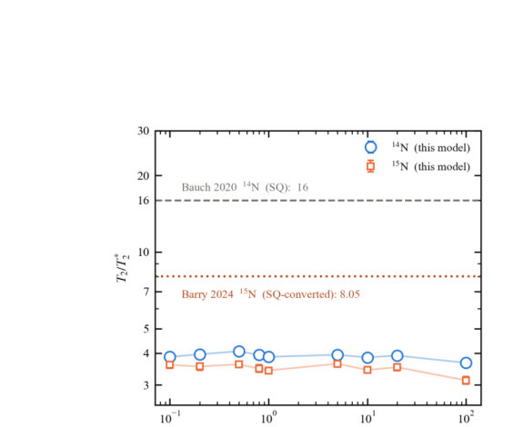
<figcaption class="paper-figure-caption"><b>Fig 2.</b> FIG. 2. Concentration-independent ratio T₂/T₂* for the two isotopes. The model gives a flat ratio, as required by the common 1/[N] scaling, with the ¹⁵N value lying systematically below the ¹⁴N value. Horizontal lines mark the experimental ¹⁴N value of Ref. [2] (dashed) and the ¹⁵N value of Ref. [9] converted to the same single- quantum convention (dotted). The model reproduces the ordering and the concentration-independence but not the full magnitude of the separation.</figcaption>
</figure>
<figure class="paper-figure-card">
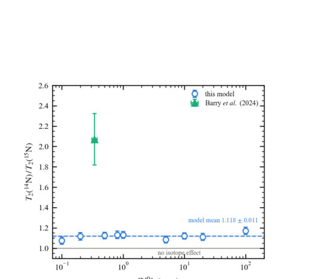
<figcaption class="paper-figure-caption"><b>Fig 3.</b> FIG. 3. Isotope ratio T₂(¹⁴N)/T₂(¹⁵N) versus nitrogen concentration. Open circles are the semiclassical model of this work, with 1σ paired-bootstrap uncertainties; the dashed line and shaded band are their weighted mean, 1.118 ± 0.011. The filled triangle is the ¹⁵N magnetometer of Ref. [9]; the horizontal bar is the uncertainty in [N], which is itself inferred from the measured T₂* and the dephasing relation of Ref. [2]. The ¹⁴N coherence time entering the measured ratio is taken from the empirical relation 160 ± 12 μs·ppm of Ref. [2], whose 7.5 % uncertainty is included in the plotted error bar. The grey line at unity marks the absence of any isotope effect.</figcaption>
</figure>
<figure class="paper-figure-card">
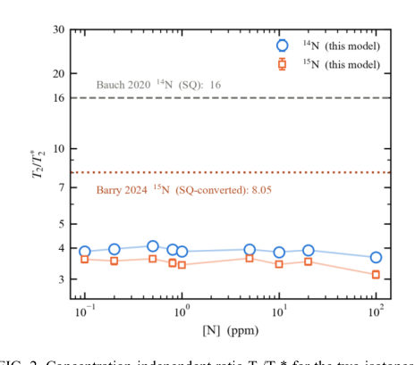
<figcaption class="paper-figure-caption"><b>Fig 4.</b> Figure 1 shows the simulated T₂* and T₂ over three decades of nitrogen concentration. Fitting T = A/[N]p with weights from the propagated errors gives p = 1.005 ± 0.003 for T₂* and p = 1.013 ± 0.003 (¹⁴N), p = 1.020 ± 0.003 (¹⁵N) for T₂ — inverse-linear scaling within a few parts per thousand, in agreement with the experimental observation of Ref. [2]. Constraining p = 1 gives the slopes collected in Table I.</figcaption>
</figure>
<figure class="paper-figure-card">
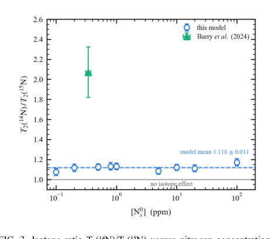
<figcaption class="paper-figure-caption"><b>Fig 5.</b> Figure 2 collects the result. The model gives T₂/T₂* = 3.93 for ¹⁴N and 3.50 for ¹⁵N, a reduction by a factor 1.12, flat in concentration as required. Experimentally the corresponding numbers are 16 [2] and 8.05 [9], a reduction by 1.99.</figcaption>
</figure>
</div>

<p><strong>Summary.</strong> This theoretical study models the decoherence of $ ext{NV}^-$ ensembles in diamond due to the surrounding nitrogen nuclear spin bath. By using a semiclassical spin-bath approach, the authors quantify the effect of the nitrogen isotope ($  ext{}^{14}  ext{N}$ vs. $   ext{}^{15}  ext{N}$) on the coherence time $T_2$. They successfully predict a constant, isotope-dependent ratio for $T_2$, providing a quantitative benchmark for understanding solid-state quantum coherence limitations.</p>
<p><strong>Why it may be interesting.</strong> This work is highly relevant to open quantum systems and quantum optics as it provides a detailed theoretical mechanism (spin-bath coupling) to explain subtle, isotope-dependent decoherence effects in solid-state qubits ($   ext{NV}^-$).</p>
<details>
<summary>Detailed structure</summary>
<p><strong>Main problem.</strong> The paper investigates whether the nitrogen nuclear isotope ($    ext{}^{14}  ext{N}$ vs. $   ext{}^{15}  ext{N}$) alone can account for the observed reduction in the ratio of Hahn-echo ($T_2$) to Ramsey ($T_2^*$) coherence times in $   ext{NV}^-$ ensembles in diamond.</p>
<p><strong>Main result.</strong> The semiclassical model predicts a constant isotope ratio for $T_2$ of $1.118 \pm 0.011$, which is independent of nitrogen concentration and is significantly above unity, suggesting the isotope has a measurable effect on coherence.</p>
<p><strong>Method.</strong> The authors employ a semiclassical spin-bath model, calculating the bath dynamics based on the fraction of hyperfine-degenerate $   ext{P}1$ pairs, which governs the spin-spin flip-flop rate.</p>
<p><strong>Model / system.</strong> The system is $ ext{NV}^-$ ensembles in diamond, whose coherence is limited by the dipolar interaction with the surrounding nitrogen nuclear spin bath ($   ext{P}1$ centers). The model uses the Jahn-Teller-resolved $    ext{P}1$ hyperfine tensor to calculate the bath dynamics.</p>
<p><strong>Key observables.</strong> Hahn-echo time ($T_2$), Ramsey time ($T_2^*$), and the ratio $T_2(	ext{N}^{14}) / T_2(	ext{N}^{15})$.</p>
<p><strong>Important parameters / regimes.</strong> Nitrogen concentration [N], hyperfine degeneracy fraction ($f_{	ext{res}}$), and the nuclear spin isotopes ($  ext{}^{14}  ext{N}$ vs. $   ext{}^{15}  ext{N}$).</p>
<p><strong>Assumptions / limitations.</strong> The model assumes that the coherence decay is governed by the fraction of resonant, flip-flop-active P1 pairs, and it serves as a benchmark for more complex many-body calculations.</p>
<p><strong>Figures summary.</strong> Figures illustrate the concentration-independent ratio of coherence times for both isotopes and show the distribution of correlation times ($  au_c$) for both isotopes, indicating a displacement in the $    ext{N}^{15}$ case.</p>
<p><strong>Paper structure.</strong> The paper establishes the physical problem by noting the discrepancy in the $T_2/T_2^*$ ratio between natural and $   ext{}^{15}  ext{N}$-doped samples. It then develops a semiclassical spin-bath model based on the hyperfine tensor, calculates the isotope-dependent degeneracy fraction, and finally predicts the constant, concentration-independent ratio of $T_2$ times.</p>
</details>
<details>
<summary>Abstract</summary>
<p>The ratio $T_2$/$T_2^*$ of the Hahn-echo and Ramsey times of nitrogen-vacancy (NV$^-$) ensembles is independent of the nitrogen concentration [N] and is $\approx$ 16 in diamond of natural isotopic abundance ($^{14}$N), yet a recent $^{15}$N-doped ensemble magnetometer gives only 8.05 $\pm$ 0.18 in the single-quantum convention. We ask whether the nitrogen nuclear isotope alone can cause such a reduction. Using a semiclassical spin-bath model with the Jahn-Teller-resolved P1 hyperfine tensor, we show that the fraction of P1 pairs that are hyperfine-degenerate, and hence free to flip-flop, is 1/4 for $^{14}$N (I = 1) but 5/16 for $^{15}$N (I = 1/2). Simulations over [N] = 0.1--100 ppm confirm that this shortens $T_2$ while leaving $T_2^*$ exactly unchanged: $T_2$($^{14}$N)/$T_2$($^{15}$N) = 1.118 $\pm$ 0.011, independent of [N] and 11$σ$ above unity. The measured contrast, 2.07 $\pm$ 0.25, is 3.8$σ$ larger, identifying resonant-channel counting as a real but partial contribution and setting a quantitative benchmark for many-body calculations.</p>
</details>
<p><sub><a href="#top">↑ back to top</a></sub></p>

<p><a id="paper-2609.37355"></a></p>
<h3 id="an-adaptive-fractional-state-links-circuit-mechanisms-to-cortical-dynamics-across-the-visual-hierarchy"><a href="http://arxiv.org/abs/2609.37355v1">An adaptive fractional state links circuit mechanisms to cortical dynamics across the visual hierarchy</a></h3>
<p><strong>Authors:</strong> Brendan Harris, Pulin Gong<br>
<strong>Type:</strong> both · <strong>Category:</strong> disordered systems and neural networks · <strong>PDF:</strong> <a href="https://arxiv.org/pdf/2609.37355v1">https://arxiv.org/pdf/2609.37355v1</a><br>
<strong>Analysis basis:</strong> full PDF text, analyzed in chunks
<strong>Topic relevance:</strong> <code>Keldysh / 2PI / non-Gaussian methods</code> <strong>1/5</strong> · <code>driven-dissipative phase transition</code> <strong>1/5</strong> · <code>methods for driven-dissipative</code> <strong>1/5</strong> · <code>non-equilibrium universality</code> <strong>1/5</strong></p>
<div class="figure-strip-hint">↔ Scroll figures horizontally</div>
<div class="paper-figures-scroll">
<figure class="paper-figure-card">
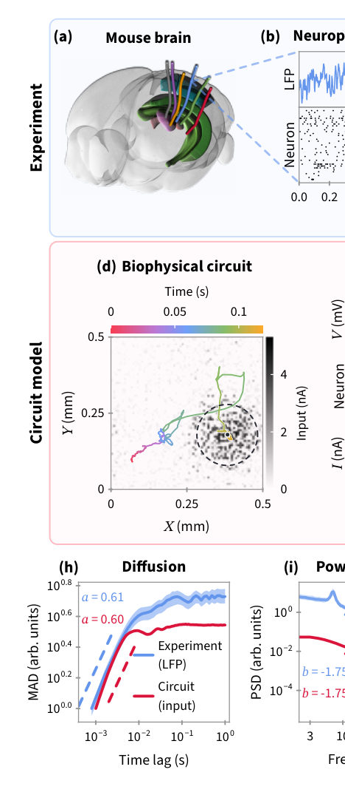
<figcaption class="paper-figure-caption"><b>Fig 1.</b> Figure 1: Cortical activity combines superdiffusion, long-range memory, and oscillations.</figcaption>
</figure>
<figure class="paper-figure-card">
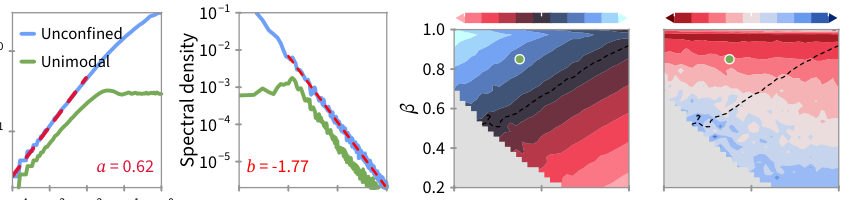
<figcaption class="paper-figure-caption"><b>Fig 2.</b> Figure 2: A minimal effective theory links superdiffusion, memory, and oscillations. Upper text shows the bFNS model, Equation 1.</figcaption>
</figure>
<figure class="paper-figure-card">
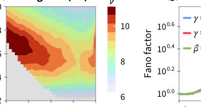
<figcaption class="paper-figure-caption"><b>Fig 3.</b> Figure 3: An empirical bi-fractional mean field reproduces the adaptive fractional state.</figcaption>
</figure>
<figure class="paper-figure-card">
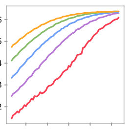
<figcaption class="paper-figure-caption"><b>Fig 4.</b> Figure 4: Working regimes vary systematically across the visual hierarchy.</figcaption>
</figure>
</div>

<p><strong>Summary.</strong> This work characterizes the 'adaptive fractional (AF) state' in the visual cortex, a dynamical regime defined by the simultaneous presence of superdiffusion, long-range memory, and oscillations. By applying a bi-fractional mean-field theory, the authors show that the quantitative signatures of this state vary systematically across the visual hierarchy, suggesting that circuit maturation involves tuning these fractional dynamical parameters.</p>
<p><strong>Why it may be interesting.</strong> The use of fractional calculus to model complex, non-Markovian dynamics in biological systems provides a powerful mathematical tool for understanding emergent collective behavior, which has parallels in modeling complex quantum many-body dynamics or open quantum systems.</p>
<details>
<summary>Detailed structure</summary>
<p><strong>Main problem.</strong> The paper investigates how cortical circuits reconcile the competing demands of responding flexibly to new inputs while integrating information about the past (long-term temporal integration).</p>
<p><strong>Main result.</strong> Cortical activity exhibits an 'adaptive fractional (AF) state,' characterized by the coexistence of heavy-tailed superdiffusive excursions, long-range temporal memory, and oscillations. This state varies systematically across the visual hierarchy, correlating with changes in effective inhibition.</p>
<p><strong>Method.</strong> The authors combine analysis of Neuropixels recordings (LFP/spiking activity) with the development and application of a bi-fractional neural sampling (bFNS) effective mean-field theory.</p>
<p><strong>Model / system.</strong> The system is the mouse visual cortex, analyzed using data from six visual areas. The theoretical framework is the bi-fractional model, which uses spatial and temporal fractional derivatives to capture non-Gaussian excursions and long-range memory.</p>
<p><strong>Key observables.</strong> Superdiffusion exponent ($a$), temporal fractional order (long-range memory), oscillation frequencies ($  heta, \gamma$), excess kurtosis ($\kappa$), and the Fano factor ($F(    au)$).</p>
<p><strong>Important parameters / regimes.</strong> The dynamical exponents ($a, b, c$) are key, showing a systematic shift across the visual hierarchy, linked to progressive weakening of effective inhibition.</p>
<p><strong>Assumptions / limitations.</strong> The analysis assumes that the observed dynamics can be effectively described by a bi-fractional process, and the interpretation of exponents relies on fitting these fractional models to empirical data.</p>
<p><strong>Figures summary.</strong> Figures illustrate LFP step-size distributions showing heavy tails, Power Spectral Density decomposition into oscillatory and aperiodic parts, and plots showing the systematic variation of dynamical exponents across different visual areas and cortical layers.</p>
<p><strong>Paper structure.</strong> The paper establishes the problem (reconciling flexibility and memory), introduces the AF state concept, details the bi-fractional model formulation, presents experimental evidence from LFP/spiking data showing the coexisting signatures, and finally maps the systematic variation of these signatures across the visual hierarchy.</p>
</details>
<details>
<summary>Abstract</summary>
<p>Cortical circuits must respond flexibly to new inputs while integrating information about the past, yet the way in which neural activity reconciles these competing demands remains unclear. Combining Neuropixels recordings from six mouse visual areas with mechanistic circuit modeling, we identify a dynamical regime in which heavy-tailed superdiffusive fluctuations coexist with long-range temporal dependence and oscillations. We formalize this regime as the adaptive fractional (AF) state, using an effective mean-field theory in which spatial and temporal fractional derivatives capture heavy-tailed excursions and long-range memory, respectively. We find that dynamical exponents characterizing the AF state vary systematically across the visual hierarchy: higher visual areas exhibit weaker superdiffusion and stronger temporal memory. In the circuit model, this hierarchical shift emerges from a progressive weakening of effective inhibition. These findings extend the classical hierarchy of timescales to a hierarchy of dynamical regimes and suggest that the AF state allows cortical areas to jointly express rapid responses and long-term temporal integration.</p>
</details>
<p><sub><a href="#top">↑ back to top</a></sub></p>

<p><a id="paper-2609.37940"></a></p>
<h3 id="blind-directions-of-linear-response-and-the-limits-of-finite-perturbation-bounds-on-efficiency-fluctuations"><a href="http://arxiv.org/abs/2609.37940v1">Blind directions of linear response and the limits of finite-perturbation bounds on efficiency fluctuations</a></h3>
<p><strong>Authors:</strong> Badr Farih<br>
<strong>Type:</strong> theory · <strong>Category:</strong> statistical mechanics · <strong>PDF:</strong> <a href="https://arxiv.org/pdf/2609.37940v1">https://arxiv.org/pdf/2609.37940v1</a><br>
<strong>Analysis basis:</strong> full PDF text, analyzed in chunks
<strong>Topic relevance:</strong> <code>Full counting statistics</code> <strong>1/5</strong> · <code>driven-dissipative phase transition</code> <strong>1/5</strong> · <code>non-equilibrium universality</code> <strong>1/5</strong> · <code>quantum measurements</code> <strong>1/5</strong></p>
<div class="figure-strip-hint">↔ Scroll figures horizontally</div>
<div class="paper-figures-scroll">
<figure class="paper-figure-card">
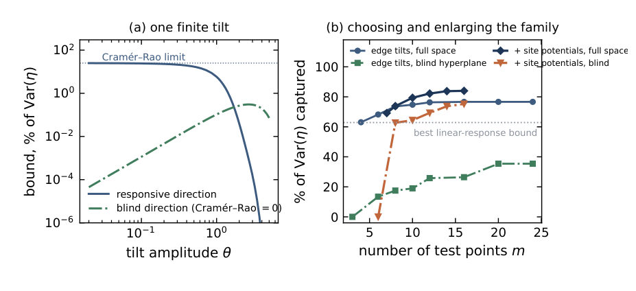
<figcaption class="paper-figure-caption"><b>Fig 1.</b> Fig. 1 (a) One finite perturbation of the three-state model. Along a responsive direction the bound sits at its Cram´er–Rao value (dotted) for small θ and collapses beyond θ ∼1. Along a blind direction Cram´er–Rao is exactly zero; the bound rises as θ2 from the origin, as Proposition 3 requires, peaks near θ = 2.5 and falls. (b) Several test points together. The horizontal line is the best linear-response bound. Edge tilts alone reach 76.7% in the full space and 35.4% on the blind hyperplane; adding site potentials raises these to 84.0% and 75.2%</figcaption>
</figure>
<figure class="paper-figure-card">
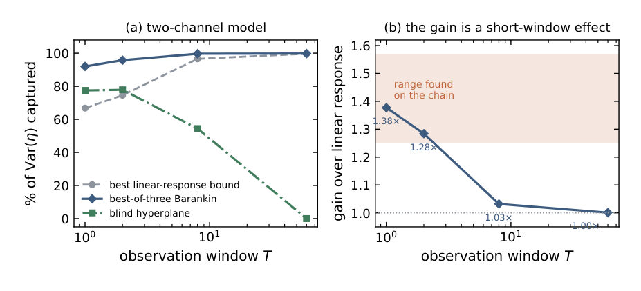
<figcaption class="paper-figure-caption"><b>Fig 2.</b> Fig. 2 (a) Two-channel model against observation window. As the window grows the counts become Gaussian, the best linear-response bound approaches Var(η), and the blind hyperplane (where that bound is identically zero) yields exactly nothing. (b) The same as a ratio. The shaded band is the range of gains found on the three-state model</figcaption>
</figure>
</div>

<p><strong>Summary.</strong> This theoretical work develops advanced statistical bounds to estimate the variance of non-linear observables, like thermodynamic efficiency, in non-equilibrium systems. It demonstrates that when standard linear response methods fail, higher-order bounds, such as the Barankin bound, can still quantify the achievable precision using finite perturbations. The findings establish a new computational tool for analyzing energy transduction in Markov processes.</p>
<p><strong>Why it may be interesting.</strong> It provides a sophisticated extension of fluctuation theorems, showing how higher-order statistical tools can extract information about non-linear processes that are invisible to standard linear response theory, which is crucial for understanding energy conversion in open quantum systems.</p>
<details>
<summary>Detailed structure</summary>
<p><strong>Main problem.</strong> The paper investigates the limits of precision in estimating non-linear observables, such as exergetic efficiency, using finite perturbations when standard linear response bounds fail.</p>
<p><strong>Main result.</strong> For the exergetic efficiency $\eta$, the Barankin multi-point bound remains strictly positive in directions where linear-response bounds vanish, recovering a significant fraction of the variance.</p>
<p><strong>Method.</strong> The authors employ the Barankin multi-point bound and analyze the $\chi^2$ divergence cost associated with perturbing the Markov jump process rates.</p>
<p><strong>Model / system.</strong> The analysis is performed on a time-homogeneous Markov jump process on a finite state space, operating in a non-equilibrium steady state. The focus is on the exergetic efficiency $\eta = W/(W + T_0S)$.</p>
<p><strong>Key observables.</strong> Exergetic efficiency ($\eta$), Cramér-Rao bound, Barankin multi-point bound, $\chi^2$ divergence.</p>
<p><strong>Important parameters / regimes.</strong> The gain is a short-window effect that disappears as counts become Gaussian; the bound is shown to be a computational instrument, not a general uncertainty relation.</p>
<p><strong>Assumptions / limitations.</strong> The analysis relies on the existence of moments for the exergetic ratio $\eta$ and the use of the $\chi^2$ divergence as the cost measure for finite perturbations.</p>
<p><strong>Figures summary.</strong> Not specified by the notes, but the analysis compares various bounds (Cramér-Rao vs. Barankin) across different perturbation directions and network sizes.</p>
<p><strong>Paper structure.</strong> The paper establishes the failure of linear response for $\eta$, introduces the Barankin bound, proves its positivity in 'blind directions,' and concludes by detailing the limitations of the bound as an inference tool.</p>
</details>
<details>
<summary>Abstract</summary>
<p>Thermodynamic uncertainty relations bound the fluctuations of time-antisymmetric currents. Stochastic efficiency is not one: a ratio of two odd quantities, it is even under path reversal, and for the conventional ratio $-W/Q_h$ no moment exists. We work with the exergetic ratio $η=W/(W+T_0S)$, whose moments exist, and ask how much of its variance a finite perturbation of the dynamics can certify when linear response cannot. The question is specific to nonlinear observables: for every current, and every observable linear in transition counts and residence times, the multiparameter Cramér-Rao bound over rate and site perturbations already equals the variance. For $η$ it does not. The Cramér-Rao bound vanishes on a hyperplane of perturbation directions, while the Barankin multi-point bound, applied to tilted path measures, stays positive there and recovers 75% of the variance of $η$ in a three-state motor model where every linear-response bound is zero. The Gram matrix of tilted Markov-jump path measures is a Feynman-Kac matrix exponential whose potential is the Hellinger integrand of the jump intensities, and the cost of a perturbation is its $χ^2$ divergence, which no dissipation bound controls. The bound captures 1.25-1.57 times the best linear-response bound, and the gain persists on networks of up to sixteen states. For an Ornstein-Uhlenbeck process the construction is exactly solvable: the optimal tilt scales as $T^{-1/2}$ and three test points nearly reach the supremum. Two limits are established. The gain is a short-window effect that disappears as the counts become Gaussian, and the bound cannot be turned into inference: coarse measurements bound $χ^2$ only from below. The construction is a computational instrument for a model in hand, not an uncertainty relation.</p>
</details>
<p><sub><a href="#top">↑ back to top</a></sub></p>

<p><a id="paper-2609.38088"></a></p>
<h3 id="boundary-criticality-in-21-dimensional-u1-dirac-quantum-spin-liquid"><a href="http://arxiv.org/abs/2609.38088v1">Boundary Criticality in (2+1)-dimensional U(1) Dirac Quantum Spin Liquid</a></h3>
<p><strong>Authors:</strong> Huan Jiang, Zhiming Pan, Xue-Jia Yu, Shao-Kai Jian<br>
<strong>Type:</strong> theory · <strong>Category:</strong> strongly correlated electrons · <strong>PDF:</strong> <a href="https://arxiv.org/pdf/2609.38088v1">https://arxiv.org/pdf/2609.38088v1</a><br>
<strong>Analysis basis:</strong> full PDF text, analyzed in chunks
<strong>Topic relevance:</strong> <code>Keldysh / 2PI / non-Gaussian methods</code> <strong>1/5</strong> · <code>analog quantum simulation</code> <strong>1/5</strong> · <code>non-equilibrium universality</code> <strong>1/5</strong></p>
<div class="figure-strip-hint">↔ Scroll figures horizontally</div>
<div class="paper-figures-scroll">
<figure class="paper-figure-card">
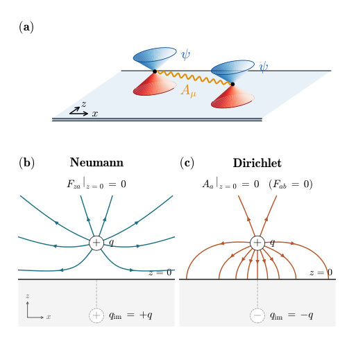
<figcaption class="paper-figure-caption"><b>Fig 1.</b> FIG. 1. (a) Fractionalized Dirac spinons ψ in a (2+1)D quan- tum spin liquid coupled to a gauge field Aµ, with the system subject to open boundary conditions in the z direction. (b,c) Electrostatic image-charge picture of the Neumann (b) and Dirichlet (c) boundary conditions, corresponding to same-sign and opposite-sign image charges, respectively.</figcaption>
</figure>
<figure class="paper-figure-card">
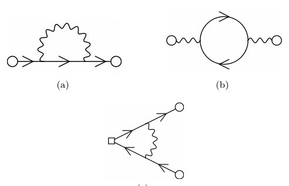
<figcaption class="paper-figure-caption"><b>Fig 2.</b> FIG. 2. One-loop diagrams for the boundary renormalization of (a) the fermion self-energy, (b) the gauge field polarization, and (c) the fermion composite operator. All external legs terminate on the boundary, as indicated by ◦. The solid line with arrow denotes the fermion propagator, while the waving line represents the gauge field porpagator. The □represents a composite operator insertion on the boundary.</figcaption>
</figure>
<figure class="paper-figure-card">
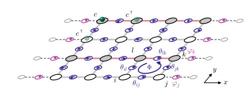
<figcaption class="paper-figure-caption"><b>Fig 3.</b> FIG. 3. Illustration of the fermion-gauge lattice model with L = 4. The matter fields reside on the lattice, while the dynamical U(1) gauge fields reside on the solid bulk links. The system has open boundary conditions along the x di- rection and periodic boundary conditions along the y axis. Gray (white) sites denote A (B) sublattices. The hopping amplitude between A sublattice (pink link) is −t, and t oth- erwise. The dashed virtual bonds contain the boundary- localized U(1) phase field φi.</figcaption>
</figure>
</div>

<p><strong>Summary.</strong> This work analyzes the boundary criticality of a 2+1 dimensional U(1) Dirac Quantum Spin Liquid using perturbative Renormalization Group techniques. By examining the difference between Neumann and Dirichlet boundary conditions, the authors establish that these conditions define distinct boundary universality classes. The findings are supported by a proposed fermion-gauge lattice model for potential physical realization.</p>
<p><strong>Why it may be interesting.</strong> The study of boundary effects in strongly correlated systems like QSLs is crucial for understanding how boundaries modify bulk quantum phases, which is relevant for engineered quantum materials.</p>
<details>
<summary>Detailed structure</summary>
<p><strong>Main problem.</strong> The paper investigates the boundary criticality in a (2+1)-dimensional U(1) Dirac Quantum Spin Liquid (QSL).</p>
<p><strong>Main result.</strong> The boundary conditions (Neumann vs. Dirichlet) lead to distinct boundary universality classes, characterized by different boundary scaling dimensions.</p>
<p><strong>Method.</strong> The analysis employs a perturbative Renormalization-Group (RG) approach in a half-space, calculating one-loop corrections to boundary two-point functions.</p>
<p><strong>Model / system.</strong> The system is a U(1) Dirac spin liquid, whose low-energy physics is modeled by (2+1) dimensional Quantum Electrodynamics (QED$_3$). A microscopic lattice model is also proposed to realize these boundary interactions.</p>
<p><strong>Key observables.</strong> Boundary scaling dimensions ($\Delta_\partial$), boundary renormalization factors ($Z_\partial$), and the anomalous dimension of boundary fermion operators ($\eta_\partial^O$).</p>
<p><strong>Important parameters / regimes.</strong> The gauge coupling constant ($e$), the dimensionality (2+1), and the boundary conditions (Neumann/Dirichlet).</p>
<p><strong>Assumptions / limitations.</strong> The analysis is restricted to one-loop order and relies on the continuum QED$_3$ description of the QSL.</p>
<p><strong>Figures summary.</strong> Figures illustrate the electrostatic image-charge picture for boundary conditions, one-loop diagrams for renormalization, and the structure of the proposed fermion-gauge lattice model.</p>
<p><strong>Paper structure.</strong> The paper develops the RG analysis by calculating bulk and boundary renormalization factors for fermion and gauge fields, determines the boundary scaling dimensions based on boundary conditions, and concludes by proposing a lattice realization.</p>
</details>
<details>
<summary>Abstract</summary>
<p>An emergent gauge field can control boundary critical behavior without changing the bulk quantum spin liquid. We investigate the boundary criticality in $(2+1)$-dimensional $U(1)$ Dirac spin liquid, whose low-energy physics is described by massless quantum electrodynamics. Using a perturbative renormalization-group analysis in a half-space, we show that Neumann and Dirichlet boundary conditions for the emergent gauge field lead to distinct boundary universality classes. We determine the boundary scaling dimensions of the fundamental fields and gauge-invariant operators that provide observable signatures. We further propose a fermion-gauge lattice model with tunable boundary interactions as a microscopic setting for realizing and probing these boundary universality classes.</p>
</details>
<p><sub><a href="#top">↑ back to top</a></sub></p>

<p><a id="paper-2609.37191"></a></p>
<h3 id="uniform-charge-density-math1187math-wave-superconductivity-in-the-pure-math1188math-math1189math-model-at-math1190math-doping-on-an-infinite-cylinder"><a href="http://arxiv.org/abs/2609.37191v1">Uniform-Charge-Density $d$-Wave Superconductivity in the Pure $t$-$J$ Model at $1/8$ Doping on an Infinite Cylinder</a></h3>
<p><strong>Authors:</strong> Guangyu Yu, Zheng Zhu<br>
<strong>Type:</strong> theory · <strong>Category:</strong> strongly correlated electrons · <strong>PDF:</strong> <a href="https://arxiv.org/pdf/2609.37191v1">https://arxiv.org/pdf/2609.37191v1</a><br>
<strong>Analysis basis:</strong> full PDF text, analyzed in chunks
<strong>Topic relevance:</strong> <code>Keldysh / 2PI / non-Gaussian methods</code> <strong>1/5</strong> · <code>analog quantum simulation</code> <strong>1/5</strong> · <code>methods for driven-dissipative</code> <strong>1/5</strong></p>
<div class="figure-strip-hint">↔ Scroll figures horizontally</div>
<div class="paper-figures-scroll">
<figure class="paper-figure-card">
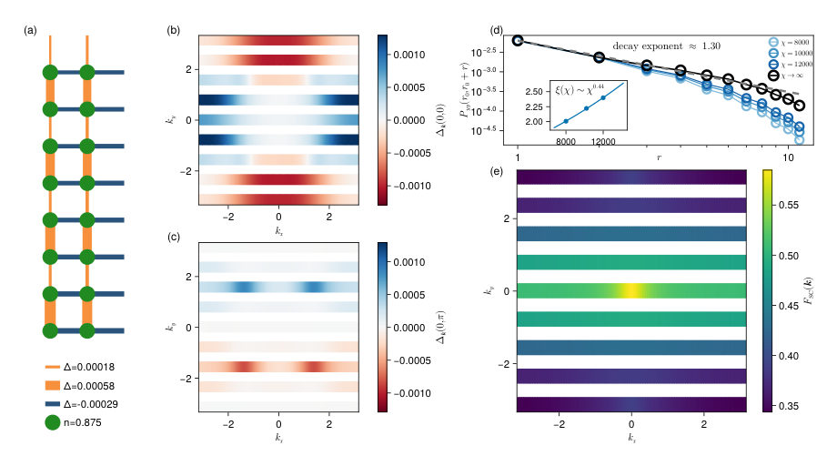
<figcaption class="paper-figure-caption"><b>Fig 1.</b> FIG. 1. (a) Bond-resolved superconducting order parameter and on-site electron density. The two inequivalent y bonds have ∆= +0.00018 (thin orange) and +0.00058 (thick orange), while x bonds have ∆= −0.00029 (blue), realizing the d-wave sign structure; the density is uniform at n = 0.875. (b) Uniform pairing component ∆k(0, 0) in the first Brillouin zone, shown as discrete strips at the allowed transverse momenta ky = nπ/4 (kx continuous); the sign change across kx = ±ky is characteristic of dx2−y2 pairing. (c) Finite-momentum component ∆k(0, π) on the same color scale as (b), strongly suppressed relative to the uniform component. (d) Singlet pair correlation Pyy(r) on a double-logarithmic...</figcaption>
</figure>
<figure class="paper-figure-card">
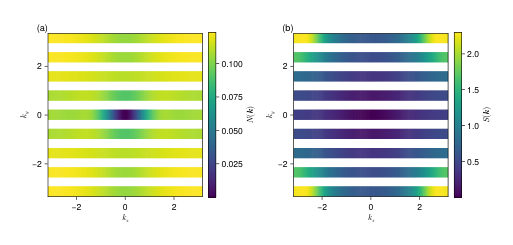
<figcaption class="paper-figure-caption"><b>Fig 2.</b> FIG. 3. (a) Static charge structure factor N(k) in the first Brillouin zone (transverse momentum quantized to the dis- crete cuts ky = nπ/4, kx continuous). The featureless pro- file shows no evidence for charge ordering. (b) Static spin structure factor S(k). The spectral weight near (± 7</figcaption>
</figure>
<figure class="paper-figure-card">
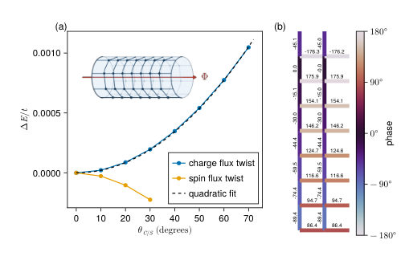
<figcaption class="paper-figure-caption"><b>Fig 3.</b> FIG. 2. (a) Ground-state energy change per site, ∆E/t = [E(θ) −E(0)]/t, versus twist angle for charge flux (blue) and spin flux (yellow) twists; the inset sketches a flux Φ thread- ing the cylinder. The energy increases quadratically under charge flux (dashed line: quadratic fit), signaling finite super- conducting phase stiffness, but decreases monotonically under spin flux. (b) Order-parameter phase (in degrees, labeled on each bond) under a charge flux twist θC = 60◦: the phase winds smoothly along the y-direction, faithfully following the applied boundary twist.</figcaption>
</figure>
<figure class="paper-figure-card">
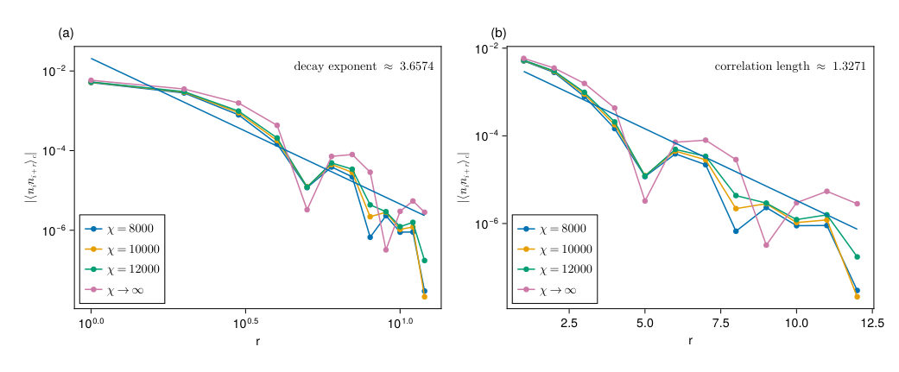
<figcaption class="paper-figure-caption"><b>Fig 4.</b> FIG. 4. Real-space density-density connected correlation function |⟨nini+r⟩c|, shown on (a) double-logarithmic and (b) semi- logarithmic scales. A power-law fit to the extrapolated curve gives a decay exponent ≈3.66, while an exponential fit gives a correlation length ξ ≈1.33 lattice constants. Both fits confirm the absence of long-range charge order.</figcaption>
</figure>
<figure class="paper-figure-card">
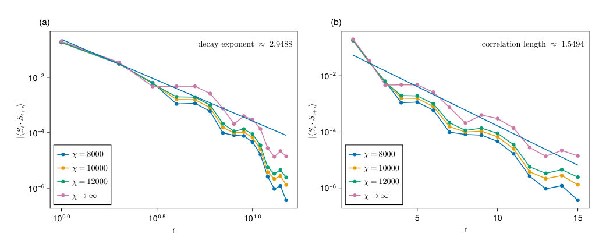
<figcaption class="paper-figure-caption"><b>Fig 5.</b> FIG. 5. Real-space spin-spin correlation function |⟨Si ·Si+r⟩|, shown on (a) double-logarithmic and (b) semi-logarithmic scales. A power-law fit to the extrapolated curve gives a decay exponent ≈2.95, while an exponential fit gives a correlation length ξ ≈1.55 lattice constants. Both fits rule out long-range magnetic order.</figcaption>
</figure>
</div>

<p><strong>Summary.</strong> This theoretical study uses the VUMPS method on the $t$-$J$ model to resolve the stripe vs. superconductivity debate at 1/8 doping. The authors conclude that the system favors a uniform $d$-wave superconducting state, as evidenced by robust pairing correlations and the rapid decay of charge and spin order parameters. This provides methodologically distinct evidence supporting superconductivity in this minimal model.</p>
<p><strong>Why it may be interesting.</strong> The rigorous application of advanced tensor network methods to resolve fundamental debates in strongly correlated electron systems provides crucial benchmarks for understanding high-Tc superconductivity mechanisms.</p>
<details>
<summary>Detailed structure</summary>
<p><strong>Main problem.</strong> The paper addresses the long-standing controversy regarding the ground state of the $t$-$J$ model at $1/8$ hole doping, specifically whether it exhibits stripe order or superconductivity.</p>
<p><strong>Main result.</strong> The study finds that the ground state is a uniform-charge-density $d$-wave superconductor with quasi-long-range pairing correlations, while charge and spin correlations decay rapidly, ruling out long-range stripe or magnetic order.</p>
<p><strong>Method.</strong> The Variational Uniform Matrix Product State (VUMPS) method is employed to optimize the wave function in the thermodynamic limit along the cylinder axis.</p>
<p><strong>Model / system.</strong> The system is the pure $t$-$J$ model on a square lattice, studied at $1/8$ hole doping ($\langle n_i 
angle = 0.875$). The analysis is performed on an infinite cylinder geometry.</p>
<p><strong>Key observables.</strong> Superconducting pairing ($\Delta$), superconducting phase stiffness, charge structure factor ($N(\mathbf{k})$), spin structure factor ($S(\mathbf{k})$), and real-space correlation functions ($\langle n_i n_{i+r} 
angle_c$, $\langle S_i \cdot S_{i+r} 
angle$).</p>
<p><strong>Important parameters / regimes.</strong> Hole doping of $1/8$; $J/t = 0.4$; cylinder circumference $L_y=8$.</p>
<p><strong>Assumptions / limitations.</strong> The VUMPS method eliminates boundary pinning effects, and the rapid decay of correlations is robust across different fitting parametrizations.</p>
<p><strong>Figures summary.</strong> Figures show the $d$-wave structure of the order parameter, confirmation of quasi-long-range pairing via power-law decay of correlations, and the absence of sharp peaks in charge/spin structure factors on the $L_y=8$ cylinder.</p>
<p><strong>Paper structure.</strong> The paper systematically analyzes superconducting order (via pairing correlations and phase stiffness), then investigates charge and spin correlations (via structure factors and real-space decay), contrasting the results with known stripe-forming regimes (e.g., $L_y=6$ at $1/6$ doping).</p>
</details>
<details>
<summary>Abstract</summary>
<p>The ground state of the square-lattice $t$-$J$ model at $1/8$ hole doping has been the subject of a long-standing controversy, with conflicting numerical reports of stripe order versus superconductivity. Here, we address this debate using the variational uniform matrix product state (VUMPS) method, which optimizes the wave function directly in the thermodynamic limit along the cylinder axis and eliminates the boundary pinning effects that can arise in finite-cylinder calculations. On an infinite cylinder of circumference $L_y = 8$, we find a uniform-charge-density $d$-wave superconducting ground state with quasi-long-range pairing correlations. The dominant pairing occurs at zero center-of-mass momentum, while no sizable finite-momentum pairing component is detected. Twisted-boundary-condition calculations reveal a finite superconducting phase stiffness, with the order-parameter phase winding smoothly to follow the applied flux, providing an independent probe of the robustness of the superconductivity. Moreover, both charge and spin correlations decay rapidly, with no signatures of long-range stripe or magnetic order, in contrast to an $L_y=6$ cylinder at $1/6$ doping where the same method readily identifies stripe order. Our results provide methodologically distinct evidence in the long-standing stripe--superconductivity debate in the pure $t$-$J$ model and reveal uniform $d$-wave superconductivity in a minimal model of doped Mott insulators.</p>
</details>
<p><sub><a href="#top">↑ back to top</a></sub></p>

<p><a id="paper-2609.38176"></a></p>
<h3 id="breakdown-of-local-denoising-as-semantic-speciation"><a href="http://arxiv.org/abs/2609.38176v1">Breakdown of Local Denoising as Semantic Speciation</a></h3>
<p><strong>Authors:</strong> Guangkuo Liu, Mert Okyay, Yifan F. Zhang, Fangjun Hu, Rahul Nandkishore, Xun Gao<br>
<strong>Type:</strong> theory · <strong>Category:</strong> disordered systems and neural networks · <strong>PDF:</strong> <a href="https://arxiv.org/pdf/2609.38176v1">https://arxiv.org/pdf/2609.38176v1</a><br>
<strong>Analysis basis:</strong> full PDF text, analyzed in chunks
<strong>Topic relevance:</strong> <code>driven-dissipative phase transition</code> <strong>1/5</strong> · <code>non-equilibrium universality</code> <strong>1/5</strong></p>
<div class="figure-strip-hint">↔ Scroll figures horizontally</div>
<div class="paper-figures-scroll">
<figure class="paper-figure-card">
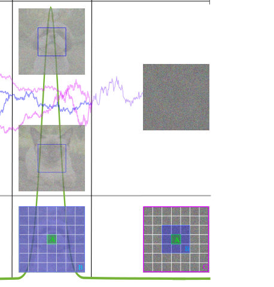
<figcaption class="paper-figure-caption"><b>Fig 1.</b> Figure 1: Semantic speciation locates the window in which local denoising breaks down. De- noising trajectory is from t = 1 (right) to t = 0 (left). The upper panel depicts a semantic speciation from white noise to cat or dog for local region (blue) and global region (magenta); the corresponding thresholds define a speciation window (black vertical lines). The noisy images in the window depict generation times in which the semantic identity is visible in the whole image, but invisible in a local patch (blue box). In the lower row, A is the patch to denoise (green), B its minimal surrounding context (blue) for below-threshold denoising, and C the rest of the image (magenta). The green curve...</figcaption>
</figure>
<figure class="paper-figure-card">
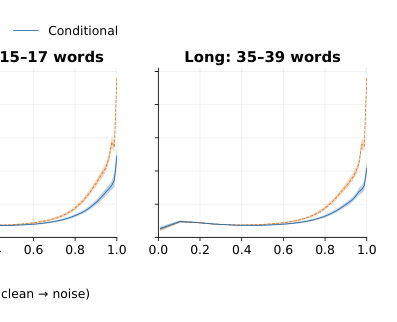
<figcaption class="paper-figure-caption"><b>Fig 2.</b> Figure 2: Semantic conditioning reduces the average local–global prediction gap in SD3. A smaller conditional gap means that restricting distant image-token interactions changes the model prediction less when semantic information is supplied. This is consistent with the common-cause interpretation: the description explains part of the shared image structure that would otherwise require distant context.</figcaption>
</figure>
<figure class="paper-figure-card">
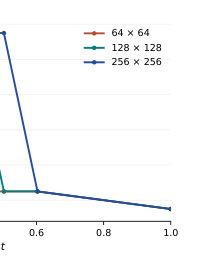
<figcaption class="paper-figure-caption"><b>Fig 3.</b> Figure 3: Label–reconstruction similarity remains high at early diffusion times and then falls toward zero. The sharp drop occurs first for the 64 × 64 crop, then for the 128 × 128 crop, and last for the full image.</figcaption>
</figure>
<figure class="paper-figure-card">

<figcaption class="paper-figure-caption"><b>Fig 4.</b> Fig. 4(a) tracks the four mutual informations It(S; B), It(S; AB), It(S; BC), It(S; ABC). These curves are monotone decreasing under the forward diffusion dynamics and develop sharp late- time cliffs. The smaller regions lose semantic information earlier, while the global regions remain informative until later times. This is the finite-size numerical signature of the forward-backward semantic transition.</figcaption>
</figure>
<figure class="paper-figure-card">
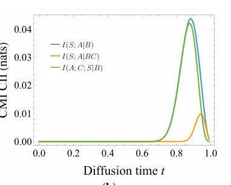
<figcaption class="paper-figure-caption"><b>Fig 5.</b> Fig. 4(b) plots the two conditional gaps It(S; A|B) = It(S; AB) −It(S; B), and It(S; A|BC) = It(S; ABC)−It(S; BC). These gaps peak near the steepest parts of the corresponding MI cliffs. For the parameters used here, Gloc peaks near t ≃0.88, whereas Gglob is smaller and delayed, peaking near t ≃0.94. This delay reflects the greater robustness of the global context ABC to the forward noise.</figcaption>
</figure>
</div>

<p><strong>Summary.</strong> This theoretical paper connects the concepts of semantic structure emergence and the breakdown of local information processing in generative models. It proves that when semantic labels are the common cause of correlations, the failure of local denoising must occur within the period where the model commits to a semantic class. The work provides analytical conditions for these two distinct temporal windows to merge into a single phase transition.</p>
<p><strong>Why it may be interesting.</strong> While the core subject is ML, the rigorous mathematical framework involving phase transitions, information bounds, and the analysis of local vs. global correlations mirrors concepts used in critical phenomena and disordered systems.</p>
<details>
<summary>Detailed structure</summary>
<p><strong>Main problem.</strong> The paper investigates the relationship between two temporal dynamics in generative models: the 'speciation window' (semantic commitment) and the 'nonlocality window' (failure of local context).</p>
<p><strong>Main result.</strong> Under a 'common cause' hypothesis, the nonlocality window must be contained within the speciation window, and conditions are derived for both windows to merge into a single 'phase transition'.</p>
<p><strong>Method.</strong> The analysis uses information-theoretic tools, specifically Mutual Information (MI) and Conditional Mutual Information (CMI), applied to theoretical models and analytically verified in Gaussian mixtures.</p>
<p><strong>Model / system.</strong> The study focuses on generative models, including diffusion and autoregressive models, analyzing their dynamics through the lens of semantic information structure.</p>
<p><strong>Key observables.</strong> Speciation Window, Nonlocality Window, Mutual Information (MI), Conditional Mutual Information (CMI), and the breakdown of local denoising quantified by I(A; C | B).</p>
<p><strong>Important parameters / regimes.</strong> Diffusion time $t$ (ranging from 0 to 1), system size $N$, and the signal-to-noise ratio $K_R$.</p>
<p><strong>Assumptions / limitations.</strong> The central assumption is the 'common cause' hypothesis, which posits that semantic labels explain a fraction of the correlations between distant tokens.</p>
<p><strong>Figures summary.</strong> Figure 1 illustrates that semantic speciation locates the window where local denoising breaks down, showing the denoising trajectory. Figure 2 shows that semantic conditioning reduces the average local–global prediction gap.</p>
<p><strong>Paper structure.</strong> The paper first formally defines the two windows using information theory, then develops the common-cause hypothesis, and finally proves the containment relationship and the conditions for the phase transition using analytical calculations in Gaussian mixtures.</p>
</details>
<details>
<summary>Abstract</summary>
<p>The dynamics of generative models exhibit two apparently distinct temporal windows: a speciation window, in which a sample commits to a semantic class, and a nonlocality window, in which local context windows become insufficient for generation. Motivated by evidence of their near-concurrence in a variety of frontier models, we investigate their relationship through the spatial distribution of semantic information. Under a "common cause" hypothesis, we prove that the nonlocality window must lie in the speciation window. This hypothesis postulates that semantic labels explain a fraction of the correlations between distant tokens, a condition that is natural for many real datasets. We further give conditions under which both windows shrink to a single limiting time as system size grows, defining a "phase transition", and verify this behavior analytically in Gaussian mixtures. Together, these results identify conditions under which semantic information explains the concurrence of speciation and nonlocality, connecting two complementary perspectives on the emergence of semantic structure in generative modeling.</p>
</details>
<p><sub><a href="#top">↑ back to top</a></sub></p>

<p><a id="paper-2609.36497"></a></p>
<h3 id="evanescent-wave-johnson-noise-from-superconductors"><a href="http://arxiv.org/abs/2609.36497v1">Evanescent-wave Johnson Noise from Superconductors</a></h3>
<p><strong>Authors:</strong> Hruday Mallubhotla, Gustav Romare, Ilya Esterlis, Maxim Vavilov, Robert Joynt, Alex Levchenko<br>
<strong>Type:</strong> theory · <strong>Category:</strong> other · <strong>PDF:</strong> <a href="https://arxiv.org/pdf/2609.36497v1">https://arxiv.org/pdf/2609.36497v1</a><br>
<strong>Analysis basis:</strong> full PDF text, analyzed in chunks
<strong>Topic relevance:</strong> <code>Keldysh / 2PI / non-Gaussian methods</code> <strong>1/5</strong> · <code>correlated / nonlocal dissipation</code> <strong>1/5</strong></p>
<div class="figure-strip-hint">↔ Scroll figures horizontally</div>
<div class="paper-figures-scroll">
<figure class="paper-figure-card">
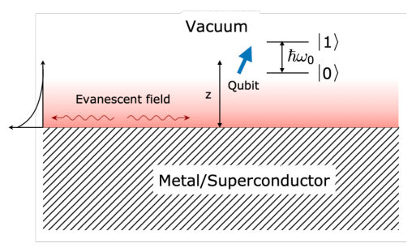
<figcaption class="paper-figure-caption"><b>Fig 1.</b> FIG. 1. A qubit with level splitting ℏω0 in vacuum, placed a distance z above a metal which becomes a supercon- ductor at low temperatures. Current fluctuations in the metal/superconductor generate evanescent electromagnetic waves that relax the qubit with the rate 1/T1.</figcaption>
</figure>
<figure class="paper-figure-card">
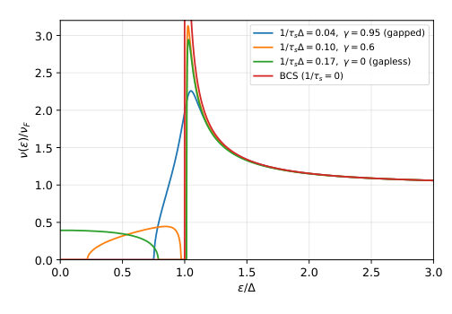
<figcaption class="paper-figure-caption"><b>Fig 2.</b> FIG. 2. Quasiparticle density of states from the Shiba theory, Eqs. (31)–(33), for representative parameters (cf. Ref. [43], Fig. 1). Energies are measured in units of the self-consistent gap ∆.</figcaption>
</figure>
<figure class="paper-figure-card">
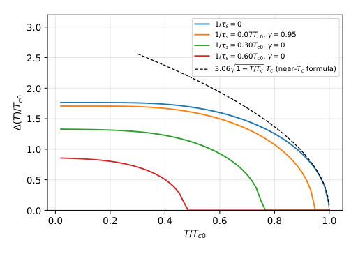
<figcaption class="paper-figure-caption"><b>Fig 3.</b> FIG. 3. Self-consistent gap with magnetic pair breaking, from Eqs. (35)–(36). The dashed curve is the near-Tc formula, shown to emphasize its limited domain of validity.</figcaption>
</figure>
<figure class="paper-figure-card">
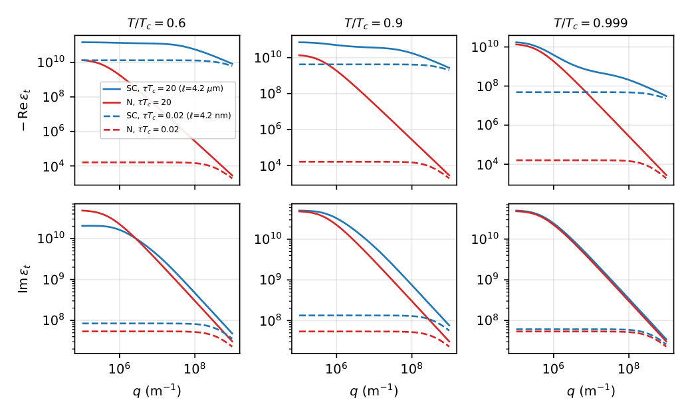
<figcaption class="paper-figure-caption"><b>Fig 4.</b> FIG. 4. Transverse dielectric function of Nb at 2.88 GHz, for the superconducting (blue) vs. normal (red) states. Solid lines are for clean samples (τTc = 20, ℓ= 4.2 µm, 1/ℓ= 2.4 × 105 m−1) and dashed lines are for dirty samples (τTc = 0.02, ℓ= 4.2 nm, 1/ℓ= 2.4 × 108 m−1). 1/ξ0 = 2.6 × 107 m−1. Three temperatures are shown. The plotted range 105 m−1 ≤q ≤ 109 m−1 corresponds to the dominant momenta q ∼1/2z for qubit heights between ∼1 nm and several micrometers, i.e., the experimentally relevant range; the upper end is still an order of magnitude below kF , where the quasiclassical kernel applies.</figcaption>
</figure>
<figure class="paper-figure-card">
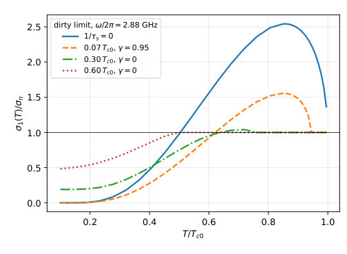
<figcaption class="paper-figure-caption"><b>Fig 5.</b> FIG. 5. Dirty-limit σ1(T)/σn at 2.88 GHz as computed from the kernel (43), for τTc = 0.02 (1/τ ≈28 ∆0); in this k →0, 1/τ ≫∆limit the ratio σ1/σn is independent of τ (Mattis– Bardeen) and of the material parameters other than ∆(T). As magnetic scattering is turned on the coherence peak disap- pears and the system becomes gapless. In the gapless regime the residual dissipation satisfies σ1(0)/σn = [ν(0)/νF]2.</figcaption>
</figure>
</div>

<p><strong>Summary.</strong> This theoretical paper calculates the Johnson noise emitted by superconductors in the near-field vacuum, quantifying how this noise limits the coherence time ($T_1$) of nearby qubits. Key findings include the prediction of a coherence-enhanced noise peak below $T_c$ and the establishment of a temperature-independent noise floor due to magnetic impurities in the gapless regime.</p>
<p><strong>Why it may be interesting.</strong> This work directly connects superconducting electrodynamics (Johnson noise) to open quantum system dynamics ($T_1$ relaxation), providing quantitative predictions for decoherence mechanisms in solid-state quantum devices.</p>
<details>
<summary>Detailed structure</summary>
<p><strong>Main problem.</strong> The paper computes the evanescent-wave Johnson noise (EWJN) generated by superconductors and determines its effect on the relaxation time ($T_1$) of nearby quantum qubits.</p>
<p><strong>Main result.</strong> The magnetic noise exhibits a Hebel-Slichter-type coherence peak below $T_c$, and the theory predicts a zero-temperature noise floor induced by magnetic impurities in the gapless regime.</p>
<p><strong>Method.</strong> The analysis uses the fluctuation-dissipation theorem applied to the electromagnetic response, deriving the noise kernels from the microscopic transverse current-response kernel $Q(q, \omega)$.</p>
<p><strong>Model / system.</strong> The system involves a qubit placed in vacuum above a bulk BCS superconductor. The theory incorporates impurity scattering (non-magnetic and magnetic) and analyzes the response in the near-field (evanescent wave) regime.</p>
<p><strong>Key observables.</strong> Relaxation rate ($1/T_1$) of spin and charge qubits; magnetic and electric field noise spectral densities ($b_B, b_E$).</p>
<p><strong>Important parameters / regimes.</strong> Temperature ($T$), distance ($z$), superconducting gap ($\Delta$), impurity concentrations, and the ratio of superconducting to normal-state density of states ($
u(0)/
u_F$).</p>
<p><strong>Assumptions / limitations.</strong> The formalism assumes the near-field approximation ($z \ll c/\omega$) and uses the quasiclassical (Fermi-surface) approximation for response functions.</p>
<p><strong>Figures summary.</strong> Figure 1 schematically illustrates the qubit coupled to evanescent waves from the superconductor. Figure 2 shows the quasiparticle density of states derived from Shiba theory for various impurity concentrations.</p>
<p><strong>Paper structure.</strong> The paper develops the theory by calculating the microscopic transverse current-response kernel, applying the fluctuation-dissipation theorem, and deriving the final $T_1$ expression, analyzing different temperature and impurity regimes.</p>
</details>
<details>
<summary>Abstract</summary>
<p>We compute the evanescent-wave Johnson noise (EWJN) in the vacuum half-space above a superconductor, and the resulting relaxation time ($T_1$) of spin and charge qubits placed at nanometer distances from the surface. The electromagnetic response is described by a single microscopic transverse current-response kernel $Q(q, ω)$ for a BCS superconductor. This is computed for varying densities of both non-magnetic impurities and magnetic impurities, for arbitrary frequency and temperature and for wave vectors $q \ll k_F$ (the Fermi wavevector). When combined with the fluctuation-dissipation theorem and the nonlocal surface impedances of the half-space, this yields the magnetic and electric field noise at any distance $z \gg k_F^{-1}$ from the surface, from which we obtain $T_1$. Just below $T_c$ the magnetic noise is enhanced relative to the normal state by the coherence (Hebel-Slichter-type) peak of the dissipative conductivity and drops exponentially at lower temperatures; the electric noise shows no coherence peak. The theory predicts that there is a zero-temperature noise floor induced by magnetic impurities. In the gapless regime produced by pair breaking, the finite subgap density of states $ν(0)$ yields a temperature-independent noise spectral density and a relaxation rate bounded by $T_1^{-1}(T)\le[ν(0)/ν_F]^{2}\,T_{1,N}^{-1}(T)$ for $T\ll T_c$, with equality in the extreme nonlocal regime. Here $ν(0)$ and $ν_F$ are the superconducting and normal-state densities of states at the Fermi energy, and $T_{1,N}(T)$ is the relaxation time the same electrode would produce in its normal state at the same temperature.</p>
</details>
<p><sub><a href="#top">↑ back to top</a></sub></p>

<p><a id="paper-2609.38085"></a></p>
<h3 id="learning-quantum-symmetries"><a href="http://arxiv.org/abs/2609.38085v1">Learning quantum symmetries</a></h3>
<p><strong>Authors:</strong> Isaac Holt, Sathyawageeswar Subramanian<br>
<strong>Type:</strong> theory · <strong>Category:</strong> quantum information and computing · <strong>PDF:</strong> <a href="https://arxiv.org/pdf/2609.38085v1">https://arxiv.org/pdf/2609.38085v1</a><br>
<strong>Analysis basis:</strong> full PDF text, analyzed in chunks
<strong>Topic relevance:</strong> <code>analog quantum simulation</code> <strong>1/5</strong> · <code>quantum measurements</code> <strong>1/5</strong></p>
<div class="figure-strip-hint">↔ Scroll figures horizontally</div>
<div class="paper-figures-scroll">
<figure class="paper-figure-card">
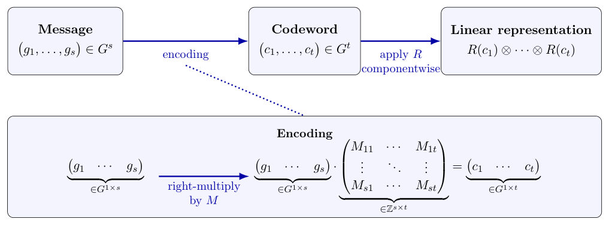
<figcaption class="paper-figure-caption"><b>Fig 1.</b> Figure 1: Construction of a linearisation of projective representation R of finite abelian group G.</figcaption>
</figure>
</div>

<p><strong>Summary.</strong> This paper advances the theory of quantum algorithms for learning symmetries in quantum systems, generalizing the classical Hidden Subgroup Problem. It introduces the physically motivated 'Anyonic' symmetry learning problem and develops efficient algorithms for states, unitaries, and Hamiltonians by reducing them to the StateHSP. This provides a comprehensive framework for analyzing symmetry in diverse quantum contexts.</p>
<p><strong>Why it may be interesting.</strong> This work provides a powerful theoretical toolkit for characterizing symmetries in quantum systems, which is crucial for understanding topological order, quantum error correction, and the structure of quantum Hamiltonians.</p>
<details>
<summary>Detailed structure</summary>
<p><strong>Main problem.</strong> The paper develops quantum algorithms to learn the symmetry subgroups of various quantum objects, extending beyond the classical Hidden Subgroup Problem (HSP). It specifically addresses symmetries of quantum states, unitaries, and Hamiltonians.</p>
<p><strong>Main result.</strong> Efficient quantum algorithms are derived for learning symmetries, including a novel approach for 'Anyonic' state symmetries and extensions to unitaries and Hamiltonians by reducing them to the State Hidden Subgroup Problem (StateHSP).</p>
<p><strong>Method.</strong> The core methodology involves generalizing the StateHSP framework, introducing new primitives like Fourier Difference Sampling, and employing mathematical reductions to map complex symmetry problems onto solvable instances of StateHSP.</p>
<p><strong>Model / system.</strong> The study focuses on symmetries associated with quantum states (pure and mixed), which are characterized by projective unitary representations of a group G. The scope extends to unitaries, Hamiltonians, and finite collections of states.</p>
<p><strong>Key observables.</strong> The symmetry subgroup $S \le G$ that leaves the quantum object invariant (the normal core or anyonic symmetry subgroup).</p>
<p><strong>Important parameters / regimes.</strong> The structure of the hidden subgroup (e.g., normal vs. general non-abelian groups) and the type of symmetry considered (Bose vs. Anyonic).</p>
<p><strong>Assumptions / limitations.</strong> The algorithms rely on the ability to reduce the symmetry learning problem for different objects (like unitaries) down to the StateHSP instance.</p>
<p><strong>Paper structure.</strong> The paper builds from the StateHSP for Bose symmetries to introduce the more general Anyonic symmetry learning problem. It then details the necessary mathematical reductions and provides specific algorithmic results for various quantum objects, culminating in the general framework.</p>
</details>
<details>
<summary>Abstract</summary>
<p>Quantum algorithms are powerful tools for finding symmetries of classical objects, most famously through Shor's algorithm and the framework of the Hidden Subgroup Problem (HSP). In this work, we study quantum algorithms for learning symmetries of quantum objects. Our starting point is the recently introduced State Hidden Subgroup Problem (StateHSP), a quantum generalisation of HSP in which the task is to learn the symmetry subgroup of a quantum state. We obtain positive results for non-abelian StateHSP, giving efficient quantum algorithms whenever the hidden subgroup is normal and for ambient groups belonging to a broad class of non-abelian groups, extending the previous general theory beyond the abelian setting.   StateHSP learns \emph{Bose} symmetries, associated with linear representations, whereas physically equivalent pure states are defined only up to global phase. Motivated by this, we introduce a new \emph{Anyonic} state symmetry learning problem based on a more physically natural notion of symmetry than that considered by StateHSP. We give an efficient quantum algorithm by reducing the problem to StateHSP, where the reduction relies on a new connection between linearisations of projective representations and linear error-correcting codes. As an application, we obtain an improved algorithm for learning stabiliser groups that applies to mixed qudit states of arbitrary local dimension. Finally, we introduce symmetry learning problems for other quantum objects, including unitaries, Hamiltonians, and finite collections of states, and obtain efficient quantum algorithms by reducing them to instances of StateHSP.</p>
</details>
<p><sub><a href="#top">↑ back to top</a></sub></p>

<p><a id="paper-2609.35962"></a></p>
<h3 id="low-frequency-gravitational-wave-detection-with-gravito-magnetism"><a href="http://arxiv.org/abs/2609.35962v1">Low Frequency Gravitational Wave Detection with Gravito-Magnetism</a></h3>
<p><strong>Authors:</strong> Reza Ebadi, Surjeet Rajendran<br>
<strong>Type:</strong> both · <strong>Category:</strong> other · <strong>PDF:</strong> <a href="https://arxiv.org/pdf/2609.35962v1">https://arxiv.org/pdf/2609.35962v1</a><br>
<strong>Analysis basis:</strong> full PDF text, analyzed in chunks
<strong>Topic relevance:</strong> <code>analog quantum simulation</code> <strong>1/5</strong> · <code>quantum measurements</code> <strong>1/5</strong></p>
<div class="figure-strip-hint">↔ Scroll figures horizontally</div>
<div class="paper-figures-scroll">
<figure class="paper-figure-card">
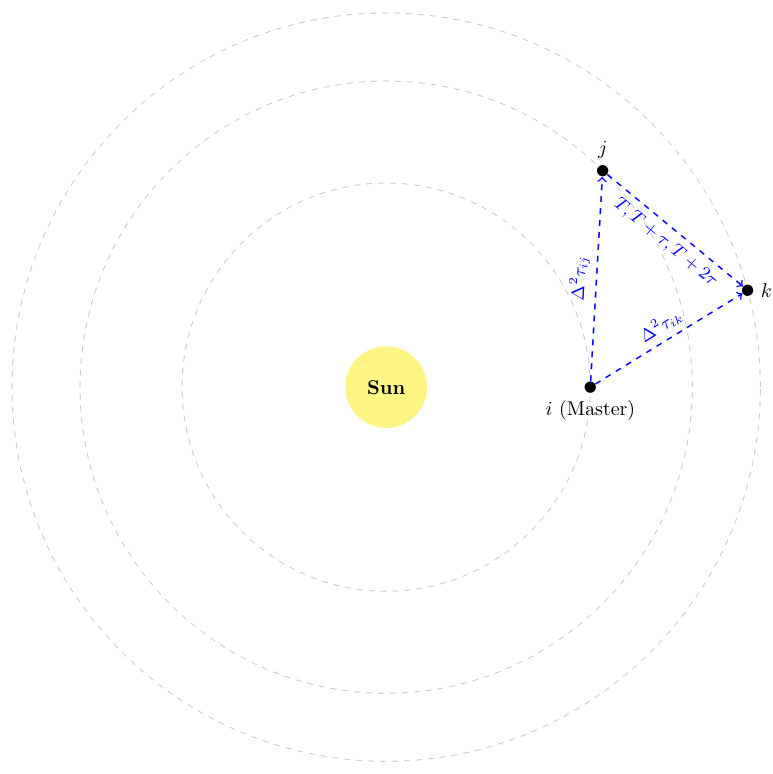
<figcaption class="paper-figure-caption"><b>Fig 1.</b> Figure 1: The three-satellite measurement constellation in solar orbit. Satellite i serves as the master clock to synchronize the array. The deputy satellites exchange laser pulses at designated global times T, T + τ, and T + 2τ to measure the discrete double time difference ∆2τ. The multiple baselines are mathematically required to invert the signal matrix and simultaneously canceling higher-order gravity gradient noise from the asteroid belt.</figcaption>
</figure>
<figure class="paper-figure-card">
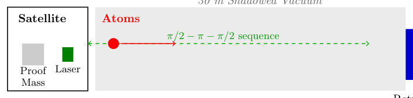
<figcaption class="paper-figure-caption"><b>Fig 2.</b> Figure 2: The hybrid atom-interferometer proof mass concept. A sun shield creates a 30-meter dark vacuum region behind the satellite. Ultra-cold atoms produced in the satellite are sent to this region. Laser pulses from the satellite, along with their reflections from the retro-reflector, are used to execute Mach-Zender π/2 −π −π/2 sequences to measure non-gravitational accelerations, which are fed back to fully stabilize the central macroscopic proof mass. We need such a setup along each measurement axis - thus, two such interferometers for each satellite.</figcaption>
</figure>
</div>

<p><strong>Summary.</strong> This work proposes a novel method to detect low-frequency gravitational waves by measuring the gravitomagnetic component, which allows separation from dominant gravity gradient noise. The technique requires a three-satellite constellation and proposes using atom interferometers to provide the necessary ultra-stable inertial reference for the proof mass. This combines advanced general relativity concepts with cutting-edge AMO metrology.</p>
<p><strong>Why it may be interesting.</strong> The integration of ultra-cold atom interferometry (a core AMO technique) to stabilize the inertial reference for gravitational wave detection is highly relevant. It pushes the boundaries of precision measurement by requiring control over quantum systems (atoms) to measure classical spacetime perturbations.</p>
<details>
<summary>Detailed structure</summary>
<p><strong>Main problem.</strong> Detecting low-frequency gravitational waves (10 nHz to 1 $\mu$Hz) is severely limited by Newtonian gravity gradient noise (GGN) from the asteroid belt.</p>
<p><strong>Main result.</strong> By exploiting the relativistic nature of gravitational waves to measure the gravitomagnetic component via Lorentz acceleration, the signal can be unambiguously extracted from the GGN background using a three-satellite constellation.</p>
<p><strong>Method.</strong> The authors propose using a three-satellite constellation to measure discrete double time differences in laser pulse arrival times, combined with the use of atom interferometers as a pristine inertial reference.</p>
<p><strong>Model / system.</strong> The system involves three satellites in elliptical orbits around the Sun, measuring time-of-arrival of laser pulses. The proposed enhancement uses atom interferometers to stabilize a macroscopic proof mass, mimicking LISA-like setups.</p>
<p><strong>Key observables.</strong> The gravitomagnetic component of gravitational waves, measured via the Lorentz acceleration ($\vec{v} 	imes \vec{B}_{	ext{gravito}}$) on test bodies, and the discrete double time difference ($\Delta^2	au_{jk}$) between satellite laser pulses.</p>
<p><strong>Important parameters / regimes.</strong> Low-frequency band (10 nHz to 1 $\mu$Hz); required interrogation time $T \sim 10^4$ s; target acceleration sensitivity $\sim 10^{-21} 	ext{ m/s}^2/\sqrt{	ext{Hz}}$.</p>
<p><strong>Assumptions / limitations.</strong> The analysis assumes the weak field limit and relies on the ability to use atom interferometers to provide an inertial reference stable enough for long interrogation times.</p>
<p><strong>Figures summary.</strong> Figure 1 illustrates the three-satellite constellation in solar orbit with satellite i as the master clock. Figure 2 depicts the hybrid atom-interferometer proof mass concept, showing the Sun, Sun Shield, Satellite, Proof Mass, Laser, and Retro-reflector arrangement.</p>
<p><strong>Paper structure.</strong> The paper first establishes the fundamental concept of using gravitomagnetism to overcome GGN noise. It then details the measurement protocol using a three-satellite constellation based on time-of-arrival measurements. Finally, it discusses the necessary technological upgrade using atom interferometers to achieve the required inertial stability.</p>
</details>
<details>
<summary>Abstract</summary>
<p>The detection of gravitational waves in the low-frequency band (10 nHz to 1 micro-Hz) using inner solar system proof masses is severely limited by Newtonian gravity gradient noise (GGN) sourced by the asteroid belt. In this paper, we propose a novel detection concept that exploits the relativistic nature of gravitational waves to break the degeneracy between the signal and the asteroid GGN background. The non-relativistic motion of asteroids dominantly sources gravito-electric fields, with velocity suppressed gravito-magnetic components. Relativistic gravitational waves produce gravito-electric and gravito-magnetic components of equal magnitude. We propose detecting the gravito-magnetic component of low frequency gravitational waves using the Lorentz acceleration of test bodies. The measurement of this Lorentz acceleration is metrologically possible due to the fact that expected astrophysical sources of low frequency gravitational waves have considerably higher characteristic strains than the strains typically expected at higher frequencies. We show that this measurement allows for unambiguous extraction of the gravitational wave signal from the gravity gradient noise in a three satellite constellation. The gravito-magnetic measurement still requires a proof mass that is well isolated from non-gravitational noise. We propose the use of atom interferometers to serve as such a pristine inertial reference.</p>
</details>
<p><sub><a href="#top">↑ back to top</a></sub></p>

<p><a id="paper-2609.35984"></a></p>
<h3 id="nonreciprocal-chiral-automata"><a href="http://arxiv.org/abs/2609.35984v1">Nonreciprocal Chiral Automata</a></h3>
<p><strong>Authors:</strong> Andrew A. Allocca, Armin Rahmani, Pouyan Ghaemi, Sriram Ganeshan<br>
<strong>Type:</strong> theory · <strong>Category:</strong> statistical mechanics · <strong>PDF:</strong> <a href="https://arxiv.org/pdf/2609.35984v1">https://arxiv.org/pdf/2609.35984v1</a><br>
<strong>Analysis basis:</strong> full PDF text, analyzed in chunks
<strong>Topic relevance:</strong> <code>Keldysh / 2PI / non-Gaussian methods</code> <strong>1/5</strong> · <code>non-equilibrium universality</code> <strong>1/5</strong></p>
<div class="figure-strip-hint">↔ Scroll figures horizontally</div>
<div class="paper-figures-scroll">
<figure class="paper-figure-card">
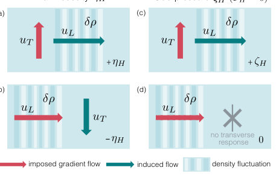
<figcaption class="paper-figure-caption"><b>Fig 1.</b> FIG. 1. The nonreciprocal effect of odd pressure ζH can be seen in the response to imposed nonuniform flows, as in Eq. (2). Hall viscosity generates both (a) longitudinal flow uL from transverse flow gradients (b) transverse flows uT from longitudinal flow gradients. Odd pressure ζH generates (c) longitudinal flows from transverse flow gradients, but (d) there is no effect from longitudinal flow gradients—a nonre- ciprocal response. In all cases changing uL induces density fluctuations δρ.</figcaption>
</figure>
<figure class="paper-figure-card">
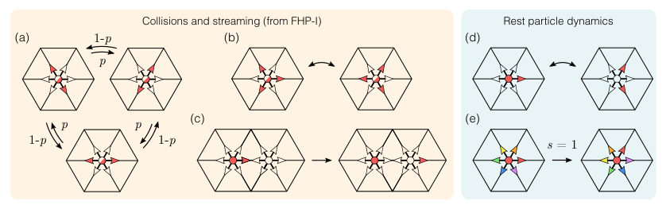
<figcaption class="paper-figure-caption"><b>Fig 2.</b> FIG. 2. Schematic depictions of the collision and streaming rules for the FHP-II automaton, separated into processes inherited from FHP-I and new dynamics of rest particles. Arrows represent mobile states and the central circle the rest state. The two-body and three-body collisions are shown in (a) and (b), with a half-filled circle indicating insensitivity to rest particles. Streaming is shown in (c): mobile particles move to the next vertex along their velocity and rest particles remain in place. The collisions that change the rest particle occupation are shown in (d), and in (e) we show the rotation of all mobile state occupations when a rest particle is present.</figcaption>
</figure>
</div>

<p><strong>Summary.</strong> This paper develops a microscopic lattice-gas model to realize the odd pressure coefficient ($\zeta_H$), a key parity-odd transport property in 2D fluids. By introducing a specific parity-breaking collision rule, the authors show that the model generates a nonreciprocal hydrodynamic response. The work uses Chapman-Enskog theory to connect these microscopic rules to macroscopic transport coefficients.</p>
<p><strong>Why it may be interesting.</strong> The study of non-equilibrium transport coefficients like odd pressure is crucial for understanding energy dissipation and momentum transfer in complex fluids, which has parallels in non-equilibrium quantum dynamics and open quantum systems.</p>
<details>
<summary>Detailed structure</summary>
<p><strong>Main problem.</strong> The primary goal is to construct a microscopic model that realizes the odd pressure coefficient ($\zeta_H$), a parity-odd transport response in 2D fluids, and to understand the resulting nonreciprocal hydrodynamics.</p>
<p><strong>Main result.</strong> The authors successfully constructed such a model using a lattice-gas automaton, showing that the odd pressure coefficient can be generated by a local parity-breaking collision rule acting as an effective magnetic field.</p>
<p><strong>Method.</strong> The analysis employs Chapman-Enskog coarse-graining to derive macroscopic transport coefficients from the microscopic lattice-gas dynamics, supplemented by Boltzmann equation analysis.</p>
<p><strong>Model / system.</strong> The system is a lattice-gas cellular automaton based on the Frisch-Hasslacher-Pomeau II (FHP-II) model, which includes a non-mobile rest particle state ($N_0$) and a specific parity-breaking collision rule.</p>
<p><strong>Key observables.</strong> Odd pressure ($\zeta_H$), Hall viscosity ($\eta_H$), and rotational viscosity ($\Gamma, \Gamma_H$), which quantify nonreciprocal hydrodynamic responses.</p>
<p><strong>Important parameters / regimes.</strong> The analysis depends on the collision parameters ($\gamma, eta, \kappa$) and the assumption of weak rotational effects.</p>
<p><strong>Assumptions / limitations.</strong> The derivation relies on the Chapman-Enskog expansion, assuming slow spatial/temporal variations, and that the rotational effect is weak.</p>
<p><strong>Figures summary.</strong> Figure 1 illustrates the nonreciprocal effect of odd pressure ($\zeta_H$) by comparing responses to imposed nonuniform flows. Figure 2 schematically depicts the collision and streaming rules for the FHP-II automaton.</p>
<p><strong>Paper structure.</strong> The paper first introduces the physical problem and the FHP-II model. It then uses the Chapman-Enskog expansion to derive the full set of transport coefficients, establishing the relationship between odd and even viscosities. Finally, it extends the analysis to rotational viscosities ($\Gamma, \Gamma_H$) by analyzing the linearized collision matrix and its eigenvalues.</p>
</details>
<details>
<summary>Abstract</summary>
<p>Odd pressure is a parity-odd transport coefficient that gives an isotropic pressure response to vorticity in compressible two-dimensional fluids. By asymmetrically coupling vortical and compressional modes, it provides a direct mechanism for a nonreciprocal hydrodynamic response reminiscent of several biological systems. Yet microscopic models realizing odd pressure as a transport coefficient are relatively scarce. Here, we construct one such model using a lattice-gas cellular automaton based on the Frisch-Hasslacher-Pomeau II model with rest particles and chiral collisions, whose Chapman-Enskog coarse-graining produces a nonzero odd pressure coefficient. The key ingredient is a local parity-breaking collision that weakly rotates moving particles in the presence of a rest particle. At hydrodynamic scales, this microscopic rule acts as an effective magnetic field, converting the model's bulk viscosity into odd pressure. More generally, we derive expressions relating Hall viscosity, odd pressure, and odd torque to their parity-even counterparts in our model.</p>
</details>
<p><sub><a href="#top">↑ back to top</a></sub></p>

<p><a id="paper-2609.36706"></a></p>
<h3 id="probing-the-electronic-structure-of-math1268math-with-arpes-and-high-energy-spectroscopy"><a href="http://arxiv.org/abs/2609.36706v1">Probing the electronic structure of $\mathrm{UTe}_2$ with ARPES and high-energy spectroscopy</a></h3>
<p><strong>Authors:</strong> Shin-ichi Fujimori<br>
<strong>Type:</strong> both · <strong>Category:</strong> strongly correlated electrons · <strong>PDF:</strong> <a href="https://arxiv.org/pdf/2609.36706v1">https://arxiv.org/pdf/2609.36706v1</a><br>
<strong>Analysis basis:</strong> full PDF text, analyzed in chunks
<strong>Topic relevance:</strong> <code>Keldysh / 2PI / non-Gaussian methods</code> <strong>1/5</strong> · <code>quantum measurements</code> <strong>1/5</strong></p>
<div class="figure-strip-hint">↔ Scroll figures horizontally</div>
<div class="paper-figures-scroll">
<figure class="paper-figure-card">
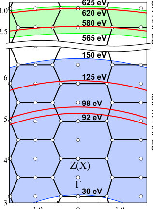
<figcaption class="paper-figure-caption"><b>Fig 1.</b> Figure 1. Crystal structure and Brillouin zone of UTe2. (a) Crystal structure (left) and Brillouin zone of UTe2. (b) ARPES cuts in multi-Brillouin-zone momentum space along the ⟨100⟩(ka) and ⟨010⟩(kb) directions. Panel (a) is reprinted from Fig. 1 of Fujimori et al , 2019 [3].</figcaption>
</figure>
<figure class="paper-figure-card">
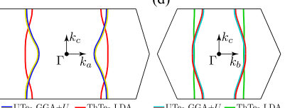
<figcaption class="paper-figure-caption"><b>Fig 2.</b> Figure 2. Calculated Fermi surfaces of UTe2. (a) Fermi surface calculated using GGA+U with U = 2 eV. (b) Fermi surface calculated for ThTe2, corresponding to the localized-5f 2 limit. (c) Comparison in the ka–kc plane. (d) Comparison in the kb–kc plane. Panel (a) is reprinted from [28] with permission, Copyright (2019) by the American Physical Society.</figcaption>
</figure>
<figure class="paper-figure-card">
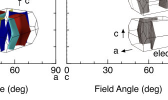
<figcaption class="paper-figure-caption"><b>Fig 3.</b> Figure 3. The result of dHvA experiment of UTe2. (a) Angular dependence of the dHvA frequency in UTe2. (b), (c) Angular dependence of the dHvA frequency calculated by GGA+U (U = 2 eV) in UTe2 and LDA for ThTe2. Reproduced from Fig. 5 of Aoki et al , 2022 [6] under CC BY 4.0.</figcaption>
</figure>
<figure class="paper-figure-card">
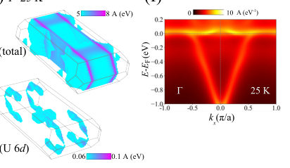
<figcaption class="paper-figure-caption"><b>Fig 4.</b> Figure 4. Proposed three-dimensional Fermi surfaces and spectra from DFT+DMFT- based calculations for UTe2. (a,b) Fermi surface and near-EF spectral function at 116 K from Halloran et al, 2025 [12]. (c,d) Fermi surface and near-EF quasiparticle spectrum at 11 K from Choi et al, 2024 [31]. (e,f) Results from Kang et al: (e) total (upper) and U 6d-projected (lower) Fermi surfaces showing the three dimensional pocket at Γ [33]; (f) spectral function near Γ at 25 K [32]. Panels (a,b), (c,d), and (f) are reproduced from [12], [31], and [32], respectively, under the CC BY 4.0 license and with permission from Springer Nature; panel (e) is reprinted from [33] with permission, Copyright (2025) by...</figcaption>
</figure>
<figure class="paper-figure-card">
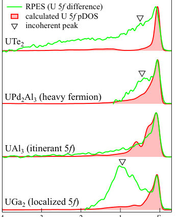
<figcaption class="paper-figure-caption"><b>Fig 5.</b> Figure 5. RPES spectra of UTe2, together with those of representative uranium compounds. (a) Density plot of the RPES spectra of UTe2, obtained by subtracting the spectrum measured at hν = 725 eV (center), together with the corresponding U 4d5/2 XAS spectrum (right). On- and off-resonance spectra were measured at hν = 736 eV and 731 eV, respectively, and the corresponding difference spectrum is shown at the bottom panel. (b) Comparison of the RPES spectra of UTe2 with those of the heavy- fermion compound UPd2Al3, the itinerant-5f compound UAl3, and the localized-5f compound UGa2. The corresponding calculated U 5f partial DOS are also shown for comparison. Panel (a) is replotted from Fig. 4...</figcaption>
</figure>
</div>

<p><strong>Summary.</strong> This review synthesizes diverse spectroscopic data on UTe2 to resolve the fundamental ambiguity surrounding the U 5f electron character. By integrating ARPES, X-ray spectroscopy, and DFT+DMFT calculations, the authors argue for an intermediate-valence state. This work is crucial for establishing the electronic benchmarks needed to understand the material's unconventional superconductivity.</p>
<p><strong>Why it may be interesting.</strong> The comparison between highly sensitive spectroscopic probes (XPS vs XAS) to resolve valence fluctuations is a general methodology applicable to understanding strongly correlated systems in AMO physics, even if the specific material is not an AMO platform.</p>
<details>
<summary>Detailed structure</summary>
<p><strong>Main problem.</strong> The central issue is determining the nature of the U 5f electrons and their role in the unconventional superconductivity of UTe2.</p>
<p><strong>Main result.</strong> The spectroscopic evidence points towards an intermediate-valence ground state in UTe2, characterized by a significant admixture of 5f^2 and 5f^3 configurations.</p>
<p><strong>Method.</strong> The review synthesizes results from multiple advanced experimental techniques (ARPES, XAS, RIXS, etc.) and compares them against theoretical calculations like DFT+DMFT.</p>
<p><strong>Model / system.</strong> The system is UTe2, a strongly correlated material. The analysis involves modeling valence fluctuations between different $5f$ configurations ($5f^2$ vs $5f^3$) and mapping the resulting electronic structure onto theoretical frameworks.</p>
<p><strong>Key observables.</strong> Low-energy quasiparticle excitations, Fermi surface topology, and the relative spectral weight observed in core-level vs. valence X-ray spectroscopies.</p>
<p><strong>Important parameters / regimes.</strong> The degree of $5f$ itinerancy, the effective Coulomb interaction ($U$), and the hybridization strength ($t$) between $5f$ and ligand orbitals.</p>
<p><strong>Assumptions / limitations.</strong> The analysis relies on integrating results from disparate techniques, acknowledging the pronounced technique dependence of the inferred electronic structure.</p>
<p><strong>Figures summary.</strong> Figures illustrate the crystal structure and Brillouin zone, showing ARPES cuts in momentum space, and comparing calculated Fermi surfaces using different theoretical parameters (e.g., varying U in GGA+U).</p>
<p><strong>Paper structure.</strong> The paper reviews spectroscopic studies, first detailing the experimental techniques (ARPES, X-ray probes) and their findings, then integrating these results with advanced theoretical methods (DFT+DMFT) to build a coherent picture of the $5f$ electronic structure.</p>
</details>
<details>
<summary>Abstract</summary>
<p>$\mathrm{UTe}_2$ has emerged as one of the most intensively studied strongly correlated materials in recent years owing to its unconventional superconductivity and the possible realization of a spin-triplet, topologically nontrivial pairing state. A central open issue concerns the nature of the $\mathrm{U}\,5f$ electrons and their participation in low-energy quasiparticle states. In this review, we summarize recent spectroscopic studies of $\mathrm{UTe}_2$ using momentum-resolved angle-resolved photoemission spectroscopy (ARPES) and element- and configuration-sensitive X-ray probes, including X-ray absorption spectroscopy (XAS), X-ray absorption near-edge structure (XANES), X-ray magnetic circular dichroism (XMCD), resonant X-ray emission spectroscopy (RXES), and resonant inelastic X-ray scattering (RIXS). A key finding is the pronounced technique dependence of the inferred electronic structure. We synthesize the present spectroscopic picture by integrating these results with modern electronic-structure calculations such as density functional theory plus dynamical mean-field theory (DFT+DMFT). These findings support an intermediate-valence ground state with significant admixture of $5f^2$ and $5f^3$ configurations in $\mathrm{UTe}_2$, and they delineate key experimental and theoretical benchmarks needed to connect the normal-state electronic structure to the superconducting mechanism.</p>
</details>
<p><sub><a href="#top">↑ back to top</a></sub></p>

<p><a id="paper-2609.38071"></a></p>
<h3 id="38-charge-density-wave-instability-in-the-kagome-metal-csvmath1283mathsbmath1284math"><a href="http://arxiv.org/abs/2609.38071v1">3/8 charge-density wave instability in the kagome metal CsV$_3$Sb$_5$</a></h3>
<p><strong>Authors:</strong> Luca Buiarelli, Hyeonseo H. Park, Ethan T. Ritz, Rafael M. Fernandes, Turan Birol<br>
<strong>Type:</strong> theory · <strong>Category:</strong> strongly correlated electrons · <strong>PDF:</strong> <a href="https://arxiv.org/pdf/2609.38071v1">https://arxiv.org/pdf/2609.38071v1</a><br>
<strong>Analysis basis:</strong> full PDF text, analyzed in chunks
<strong>Topic relevance:</strong> <code>Frenkel-Kontorova</code> <strong>1/5</strong></p>
<div class="figure-strip-hint">↔ Scroll figures horizontally</div>
<div class="paper-figures-scroll">
<figure class="paper-figure-card">
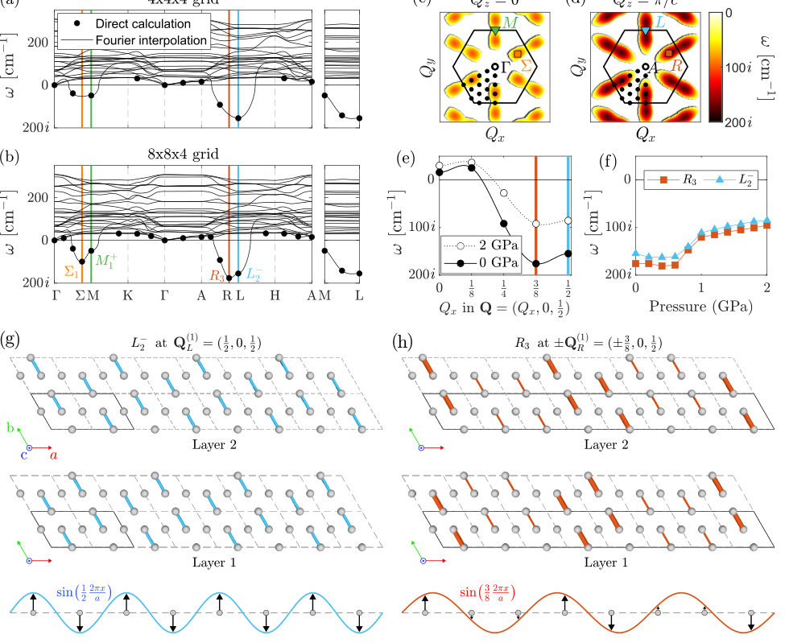
<figcaption class="paper-figure-caption"><b>Fig 1.</b> Figure 1. Phonon instabilities of CsV3Sb5 from DFPT. (a–b) Phonon dispersion along high-symmetry lines, calculated on a 4 × 4 × 4 (a) and 8 × 8 × 4 (b) Q-point grid; black circles show frequencies computed directly by DFPT. The finer grid in (b) reveals the Σ1 and R3 instabilities absent in (a). (c–d) Color plot of the imaginary part of the unstable phonon frequencies in the Brillouin zone of P6/mmm at the high-symmetry planes (c) Qz = 0 and (d) Qz = π/c; yellow and orange squares mark the points along the Σ and R lines with δ = 3/8. (e) Unstable phonon frequencies along the A–L line at applied pressures of 0 and 2 GPa. (f) Pressure evolution of the R3 and L− 2 imaginary frequencies,...</figcaption>
</figure>
<figure class="paper-figure-card">

<figcaption class="paper-figure-caption"><b>Fig 2.</b> Figure 2. (a) Total energy as a function of the displacement amplitude along the L− 2 and R3 phonon eigenvectors, com- puted in 2 × 1 × 2 and 8 × 1 × 2 supercells, respectively. The displacement on the horizontal axis is the root-sum-of-squares displacement normalized by the square root of the supercell size relative to the primitive cell. (b–c) Enthalpy along the same distortions at applied pressure values of 0, 0.5, and 1 GPa. The contrasting pressure sensitivity of the two modes is the key result: the L− 2 minimum rises rapidly with pressure (b) while the R3 minimum remains comparatively stable (c), switching the most stable phase near 1 GPa.</figcaption>
</figure>
<figure class="paper-figure-card">
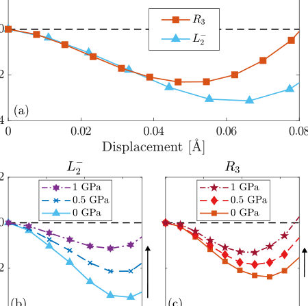
<figcaption class="paper-figure-caption"><b>Fig 3.</b> Fig. 1(g–h) contrasts the real-space characters of the L− 2 and R3 modes extracted from their polarizations. Apart from the different periodicities (2 unit cells along [100] for L− 2 , as opposed to 8 unit cells for R3), both modes are well described as nearest-neighbor bond order between the V ions. The pressure dependence of the unstable phonon branch near L is shown in Figs. 1(e–f). Both the R3 and L− 2 instabilities exhibit only a small change in frequency up to ∼0.8 GPa, above which both of their frequencies decrease in absolute magnitude sharply, and continue to decrease with pressure afterwards. Nevertheless, both modes remain unstable well beyond 2 GPa, consistent with earlier...</figcaption>
</figure>
<figure class="paper-figure-card">
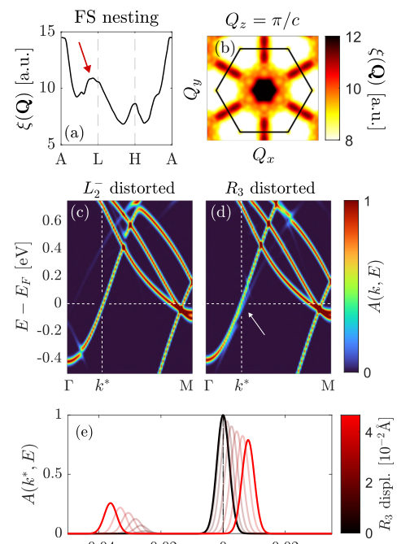
<figcaption class="paper-figure-caption"><b>Fig 4.</b> Figure 3. Electronic structure of CsV3Sb5 and its response to the R3 distortion. (a) Fermi surface nesting function ξ(Q) along the A–L–H–A path and (b) color plot of ξ(Q) in the Brillouin zone at Qz = π/c. The latter reveals a momentum-dependent structure reminiscent of that of the un- stable phonon modes shown in Fig. 1(d). (c–d) Band struc- ture (spectral density) unfolded into the primitive Brillouin zone along the Γ–M line for the L− 2 distorted structure at its energy minimum (c) and the R3 distorted structure at its energy minimum (d). (e) Energy cuts of the spectral density as a function of R3 displacement, at fixed momentum k∗.</figcaption>
</figure>
<figure class="paper-figure-card">
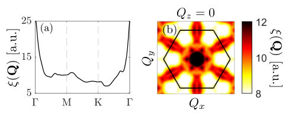
<figcaption class="paper-figure-caption"><b>Fig 5.</b> Figure 4. Fermi surface nesting function on the Qz = 0 plane. (a) Nesting on the high symmetry line Γ–M–K-Γ line. (b) Nesting on the Qx, Qy plane as a heat map. Contrary to qz = π/c, the relative peaks close to the BZ edge are on the Γ–K line.</figcaption>
</figure>
</div>

<p><strong>Summary.</strong> This theoretical study investigates the charge density wave (CDW) instability in the kagome metal CsV3Sb5, finding that the dominant instability switches from one type to another as pressure increases. By combining advanced DFT calculations with Landau theory, the authors map out the phase diagram, explaining the observed structural transitions and their connection to the superconducting state.</p>
<p><strong>Why it may be interesting.</strong> While focused on CDW physics, the detailed analysis of competing order parameters, phase transitions driven by external fields (pressure), and the use of symmetry-constrained free energy functionals are highly relevant to understanding complex many-body ground states in correlated materials.</p>
<details>
<summary>Detailed structure</summary>
<p><strong>Main problem.</strong> The study aims to determine the leading lattice instability (Charge Density Wave, CDW) in the kagome metal CsV3Sb5 and understand how this instability changes with applied pressure relative to superconducting transitions.</p>
<p><strong>Main result.</strong> The analysis predicts that the CDW instability switches from a conventional L-2 type at ambient pressure to a new R3 instability above approximately 1 GPa, consistent with experimental observations.</p>
<p><strong>Method.</strong> The authors employed Density Functional Perturbation Theory (DFPT) calculations, finite-displacement DFT, and a Landau free energy analysis to model the competing electronic and lattice instabilities.</p>
<p><strong>Model / system.</strong> The physical system is the kagome metal CsV3Sb5. The theoretical framework involves analyzing the competition between multiple order parameters (M, L, Sigma, R) using a complex free energy functional derived from symmetry considerations.</p>
<p><strong>Key observables.</strong> CDW wavevectors (Q), phonon frequencies (imaginary parts), superconducting critical temperature (Tc), and lattice distortions (monoclinic symmetry).</p>
<p><strong>Important parameters / regimes.</strong> Pressure (P), specifically the transition point near 1 GPa, and the relative strengths of anharmonic coupling terms in the free energy functional.</p>
<p><strong>Assumptions / limitations.</strong> The analysis assumes that the R3 mode is the leading instability based on fine-grid DFPT calculations, and that the free energy can be accurately modeled by coupling the four primary order parameters.</p>
<p><strong>Figures summary.</strong> Figures illustrate phonon instabilities across different Q-grids, show the pressure evolution of imaginary phonon frequencies for L-2 and R3 modes, and compare total energy/enthalpy curves to map the phase transition between the two CDW states.</p>
<p><strong>Paper structure.</strong> The paper progresses from identifying the initial instability using DFPT on fine grids, to comparing the stability of competing modes (L-2 vs R3) using finite-displacement calculations, and finally constructing a comprehensive Landau free energy functional to explain the coexistence and transition between multiple ordered phases.</p>
</details>
<details>
<summary>Abstract</summary>
<p>The kagome metal CsV$_3$Sb$_5$ exhibits charge density wave (CDW) and superconducting transitions, both of which are substantially affected by pressure. Recent x-ray diffraction experiments identify a new charge-ordered phase at a pressure coinciding with the dip of the superconducting dome. This CDW phase displays a distinctive wavevector $\mathbf{Q} = (3/8, 0, 1/2)$ and monoclinic symmetry, in contrast to the $2\times2\times 2$ and $2\times2\times 4$ orders reported at ambient pressure. In this letter, we show that density functional perturbation theory (DFPT) calculations on a fine reciprocal-space grid predict the leading lattice instability of CsV$_3$Sb$_5$ to be at this wavevector. Finite-displacement calculations reveal that while anharmonic effects stabilize the conventional $L_2^-$ CDW at ambient pressure, the competing $3/8$ instability becomes energetically favorable above $\sim$1 GPa, consistent with experimental observations. Interestingly, the nesting function displays a peak at the same wavevector. A Landau free energy analysis explains the emergence of the monoclinic distortion observed in x-ray diffraction, in addition to several bond-ordering patterns that may be relevant to the observed trends in the superconducting $T_c$.</p>
</details>
<p><sub><a href="#top">↑ back to top</a></sub></p>

<p><a id="paper-2609.38044"></a></p>
<h3 id="a-tale-of-two-walks-kipnis-marchioro-and-presutti-meet-kac-in-a-quantum-world"><a href="http://arxiv.org/abs/2609.38044v1">A Tale of Two Walks: Kipnis, Marchioro and Presutti Meet Kac in a Quantum World</a></h3>
<p><strong>Authors:</strong> Qian Chen, Jingcheng Liu, Minglong Qin, Leonard Schulman, Fang Song, Penghui Yao, Mingnan Zhao<br>
<strong>Type:</strong> theory · <strong>Category:</strong> statistical mechanics · <strong>PDF:</strong> <a href="https://arxiv.org/pdf/2609.38044v1">https://arxiv.org/pdf/2609.38044v1</a><br>
<strong>Analysis basis:</strong> full PDF text, analyzed in chunks
<strong>Topic relevance:</strong> <code>analog quantum simulation</code> <strong>1/5</strong></p>
<div class="figure-strip-hint">↔ Scroll figures horizontally</div>
<div class="paper-figures-scroll">
<figure class="paper-figure-card">
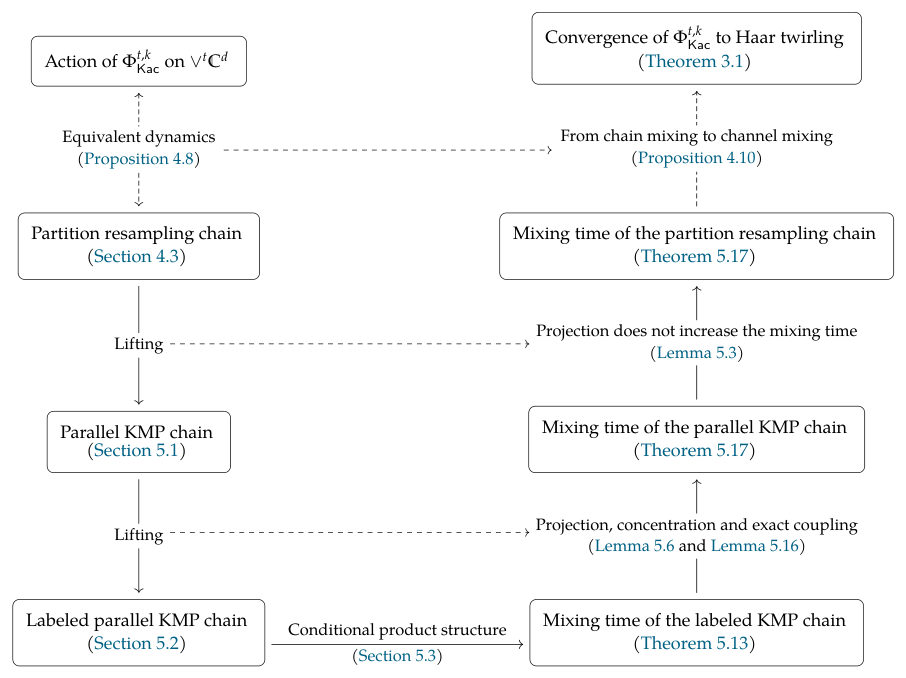
<figcaption class="paper-figure-caption"><b>Fig 1.</b> Figure 1: Proof outline. The left column shows the relevant quantum and classical dynamics, and the right column shows the corresponding quantitative bounds.</figcaption>
</figure>
</div>

<p><strong>Summary.</strong> This work reveals a fundamental link between the quantum parallel Kac's walk and the classical Kipnis-Marchioro-Presutti (KMP) process. By showing this equivalence, the authors derive sharp, uniform mixing time bounds for the KMP process, improving known results for random walks on simplices. This advances the understanding of convergence rates in complex interacting particle systems.</p>
<p><strong>Why it may be interesting.</strong> The connection between quantum randomizing processes (Kac walk) and classical mixing dynamics (KMP) provides powerful tools for analyzing convergence in complex many-body systems, relevant for understanding thermalization and scrambling in quantum many-body physics.</p>
<details>
<summary>Detailed structure</summary>
<p><strong>Main problem.</strong> The paper establishes a deep connection between the parallel Kac's walk (a quantum process) and the Kipnis-Marchioro-Presutti (KMP) process (a classical interacting particle system). It aims to analyze the mixing times of these processes.</p>
<p><strong>Main result.</strong> The analysis shows that the quantum twirling channel converges rapidly to the Haar measure, and it proves a mixing time analogue of Aldous's conjecture for the KMP process on general graphs.</p>
<p><strong>Method.</strong> The authors use techniques involving conditional product structure, exact coupling, and relating quantum dynamics to classical Markov chains on partitions to derive sharp mixing bounds.</p>
<p><strong>Model / system.</strong> The models include the parallel Kac's walk on the symmetric subspace of $(\mathbb C^d)^{\otimes t}$, the standard KMP process on general graphs, and the coordinate hit-and-run process on the standard simplex.</p>
<p><strong>Key observables.</strong> Mixing time, total variation distance, and the rate of convergence to the Haar measure.</p>
<p><strong>Important parameters / regimes.</strong> Number of copies $t$, dimension $d$, and error tolerance $\epsilon$.</p>
<p><strong>Assumptions / limitations.</strong> The analysis relies on the conditional product structure holding for both quantum and classical KMP dynamics.</p>
<p><strong>Figures summary.</strong> The notes do not provide a summary of figures, but mention Figure 1 outlines the proof connecting quantum/classical dynamics to quantitative bounds.</p>
<p><strong>Paper structure.</strong> The paper proceeds by first establishing the equivalence between the parallel Kac's walk and a classical partition resampling chain. It then applies advanced Markov chain techniques to prove the mixing time bounds for this classical process, culminating in applications to specific random walks like coordinate hit-and-run.</p>
</details>
<details>
<summary>Abstract</summary>
<p>We reveal an unexpected connection between the parallel Kac's walk and the Kipnis-Marchioro-Presutti (KMP) process. The twirling channel induced by the parallel Kac's walk on the symmetric subspace is exactly encoded by a classical Markov chain on partitions, which lifts to a parallel KMP process on complete graphs. This correspondence reduces the analysis of the twirling channel to the mixing of the parallel KMP process. We prove that $O(\log d+\log(1/\varepsilon))$ repetitions suffice to approximate Haar twirling on the symmetric subspace of $(\mathbb C^d)^{\otimes t}$ to error $\varepsilon$, uniformly in the number of copies $t$.   For the standard KMP process on general graphs, we prove a mixing-time analogue of Aldous's conjecture: at fixed accuracy, the mixing time of the $t$-particle process is at most a constant times the single-particle mixing time multiplied by the logarithm of the number of vertices, uniformly in $t$. As an application, we improve the total variation mixing-time bound for coordinate hit-and-run on the $n$-dimensional standard simplex from $\widetilde O(n^3)$ (Kook and Vempala, 2026) to $\widetilde O(n)$, while removing the dependence on the initial distribution.   Our main technical contribution is conditional product structure for both parallel and standard KMP processes. Conditioned on suitable auxiliary randomness, the labeled particles evolve independently. Combining this structure with an exact coupling yields mixing bounds uniform in the number of particles for both unlabeled KMP models. These bounds are sharp up to logarithmic factors and imply rapid convergence of the parallel Kac twirling channel on the symmetric subspace.</p>
</details>
<p><sub><a href="#top">↑ back to top</a></sub></p>

<p><a id="paper-2609.36710"></a></p>
<h3 id="block-wise-variational-quantum-algorithms-for-pdes-with-interface-penalty-constraints"><a href="http://arxiv.org/abs/2609.36710v1">Block-Wise Variational Quantum Algorithms for PDEs with Interface Penalty Constraints</a></h3>
<p><strong>Authors:</strong> Hangran Jie, Yuntao Cui, Sunho Kim<br>
<strong>Type:</strong> both · <strong>Category:</strong> quantum information and computing · <strong>PDF:</strong> <a href="https://arxiv.org/pdf/2609.36710v1">https://arxiv.org/pdf/2609.36710v1</a><br>
<strong>Analysis basis:</strong> full PDF text, analyzed in chunks
<strong>Topic relevance:</strong> <code>Keldysh / 2PI / non-Gaussian methods</code> <strong>1/5</strong></p>
<div class="figure-strip-hint">↔ Scroll figures horizontally</div>
<div class="paper-figures-scroll">
<figure class="paper-figure-card">
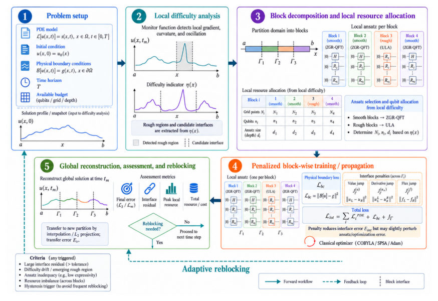
<figcaption class="paper-figure-caption"><b>Fig 1.</b> Fig. 1 Workflow of the proposed block-wise VQA–PDE framework. Stage 1 defines the PDE, initial and physical-boundary data, time horizon, and available resources. Stage 2 evaluates the normalized local- difficulty monitor and identifies rough regions. Stage 3 places block interfaces and assigns power-of-two grid budgets, qubit widths, and block-dependent ansatz families. Stage 4 minimizes local PDE residuals together with the physical-boundary loss and value, derivative, and PDE-dependent flux interface penalties. Stage 5 reconstructs the global field, evaluates accuracy and resource diagnostics, and triggers adaptive reblocking when the current partition becomes inadequate. A reblocking...</figcaption>
</figure>
<figure class="paper-figure-card">
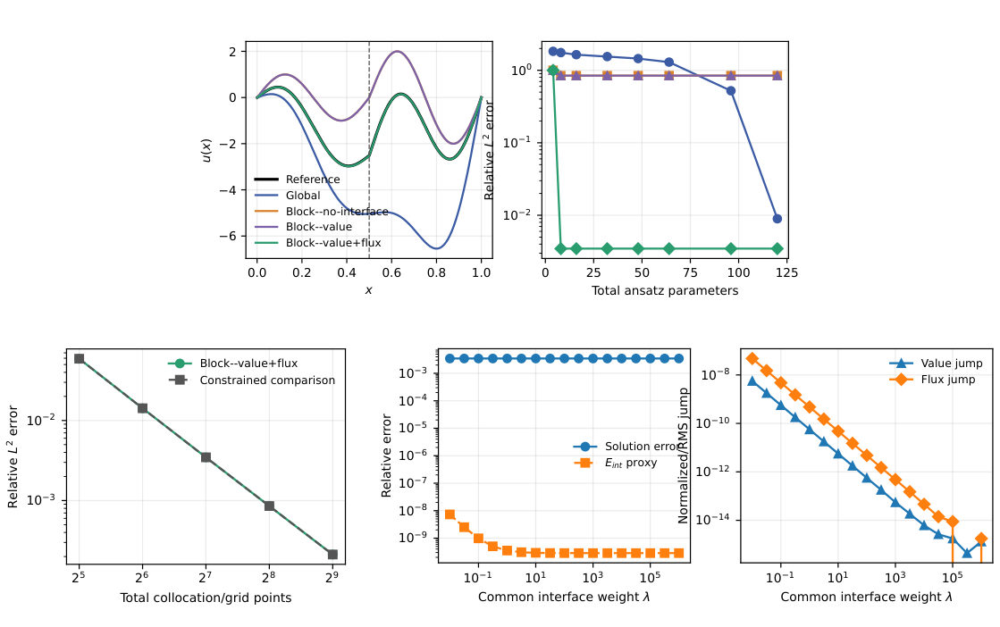
<figcaption class="paper-figure-caption"><b>Fig 2.</b> Fig. 2 Experiment 1, shown at the fixed panel height used throughout this section. Top left: reference, global, and flux-controlled block profiles at the matched budget; the dashed line is the material interface. Top right: relative error versus total ansatz parameters. Bottom left: closure/grid convergence, with approximately second-order decay. Bottom center: field error versus the common interface weight. Bottom right: RMS value and physical-flux jumps versus that weight. The unstable no-flux profile is omitted from the profile scale but retained in the numerical comparison</figcaption>
</figure>
<figure class="paper-figure-card">
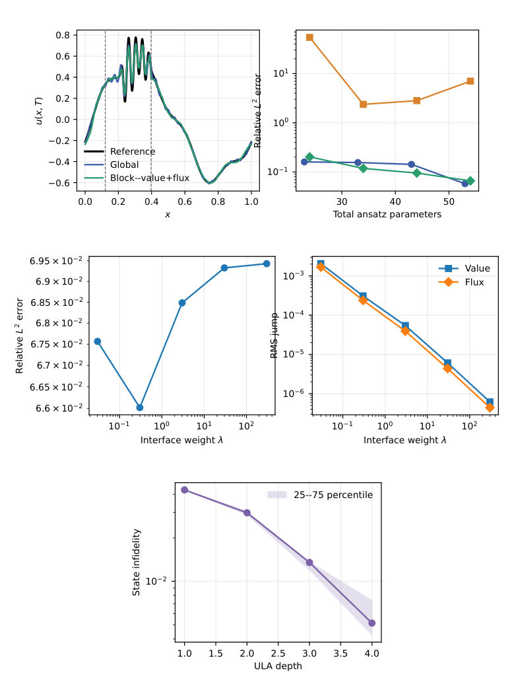
<figcaption class="paper-figure-caption"><b>Fig 3.</b> Fig. 3 Experiment 2, with every ordinary panel shown at the common fixed height. First row, left: final reference, global, and controlled block profiles; dashed lines delimit the rough block selected from u0. First row, right: relative error versus total ansatz parameters, including the moderate-budget block gain and higher-budget global crossover. Second row: field error and interface jumps versus the common value/flux weight. Third row: the separate five-qubit ULA statevector check; points are medians over ten initializations and the band is the 25–75 percentile range</figcaption>
</figure>
<figure class="paper-figure-card">
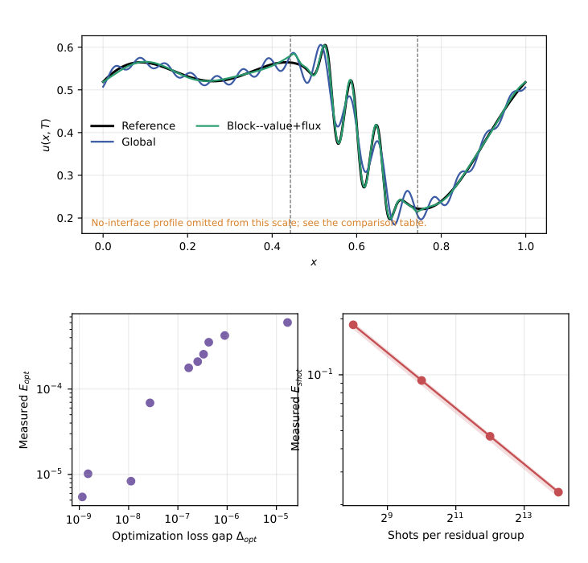
<figcaption class="paper-figure-caption"><b>Fig 4.</b> Fig. 4 Experiment 3, with both rows shown at the common fixed height. Top: nonlinear solution comparison at T = 0.02; the black, blue, and green curves are the reference, global, and value-plus-flux block solutions, and dashed lines mark the rough-block interfaces. Bottom left: directly measured optimizer deviation Eopt versus loss gap ∆opt for ten fixed-budget seeds. Bottom right: median shot-induced deviation versus shots per residual group; faint lines show individual seeds and the central trend follows M −1/2. The divergent no-interface profile is omitted from the plotted range but retained in the error table.</figcaption>
</figure>
<figure class="paper-figure-card">

<figcaption class="paper-figure-caption"><b>Fig 5.</b> Fig. 5 Experiment 4 results grouped with their governing equations and discussion. Top: relative errors and stepwise interface trajectories; dotted vertical lines mark the three reblocking events. Middle: four field snapshots, with dashed adaptive interfaces. Bottom: event count and cumulative transfer error with and without hysteresis. Panel heights follow the common convention used in the preceding experiments</figcaption>
</figure>
</div>

<p><strong>Summary.</strong> This paper introduces a block-wise Variational Quantum Algorithm framework designed to solve PDEs whose solutions are not uniform across the domain. By decomposing the problem into smaller, locally optimized quantum subproblems coupled by interface penalties, it overcomes the resource limitations of global quantum representations. This approach proves that high-fidelity quantum simulation of complex PDEs is feasible on near-term quantum hardware.</p>
<p><strong>Why it may be interesting.</strong> It provides a concrete, resource-aware quantum algorithm design pattern for simulating complex physical systems governed by PDEs, moving beyond idealized global representations.</p>
<details>
<summary>Detailed structure</summary>
<p><strong>Main problem.</strong> Developing Variational Quantum Algorithms (VQAs) to solve Partial Differential Equations (PDEs) that exhibit spatially heterogeneous complexity, such as localized singularities or thin boundary layers.</p>
<p><strong>Main result.</strong> The block-wise VQA framework achieves lower approximation errors and reduced peak local circuit width compared to global VQA approaches, demonstrating that high-fidelity PDE solutions are possible without a single globally expressive ansatz.</p>
<p><strong>Method.</strong> The method decomposes the computational domain into locally represented quantum subproblems (blocks), coupling them via unified jump penalties inspired by Discontinuous Galerkin methods.</p>
<p><strong>Model / system.</strong> The model involves solving general PDEs (elliptic, advection-diffusion, Burgers) over a spatial domain $\Omega$, which is adaptively partitioned into smaller blocks $I_i$. The solution is encoded into a quantum state $|\psi(	heta)
angle$.</p>
<p><strong>Key observables.</strong> Approximation errors, peak local circuit width, residual-based loss function values, and error contributions separated by source (e.g., interface coupling, ansatz expressivity).</p>
<p><strong>Important parameters / regimes.</strong> The computational budget (qubit count/grid size) and the local difficulty indicator $\eta(x)$ used for adaptive reblocking.</p>
<p><strong>Assumptions / limitations.</strong> The analysis relies on rigorously separating various error contributions and assumes a PDE-dependent stability condition for the residual-to-solution control.</p>
<p><strong>Figures summary.</strong> The notes mention comparing results against global VQA approaches, showing error reduction and reduced peak circuit width for the block-wise method in various PDE tests.</p>
<p><strong>Paper structure.</strong> The paper introduces the problem limitation of global ansatzes, proposes the block-wise decomposition and coupling mechanism, details the adaptive resource allocation and error analysis, and validates the approach through residual-based simulations on multiple PDE types.</p>
</details>
<details>
<summary>Abstract</summary>
<p>Global variational quantum algorithm (VQA) frameworks for solving partial differential equations (PDEs) often rely on a single expressive ansatz over a uniform grid, which becomes structurally inefficient when solutions exhibit spatially heterogeneous complexity such as localized singularities or thin boundary layers. A localized nonsmooth feature can degrade the convergence of the entire global quantum representation, imposing unnecessary circuit depth and amplifying the risk of vanishing gradients in barren plateaus.   To overcome this limitation, we propose a block-wise VQA framework for PDEs characterized by spatially heterogeneous solution complexity. The computational domain is decomposed into locally represented quantum subproblems, where grid budgets and ansatz families are dynamically assigned based on a computable difficulty indicator. Artificial block interfaces are coupled through unified jump penalties for state values, derivatives, and physical fluxes, while adaptive reblocking tracks moving rough regions to maintain local accuracy without excessive global qubit overhead. The error analysis rigorously separates spatial discretization, ansatz expressivity, optimization convergence, finite-shot sampling noise, transfer errors from reblocking, and interface-coupling contributions. Reproducible residual-based simulations on representative elliptic, advection--diffusion, and Burgers problems demonstrate lower approximation errors and reduced peak local circuit width compared to global VQA approaches. These results substantiate block-wise quantum resource localization, confirming that high-fidelity PDE solutions can be achieved on near-term quantum devices without requiring a single globally expressive ansatz.</p>
</details>
<p><sub><a href="#top">↑ back to top</a></sub></p>

<p><a id="paper-2609.36335"></a></p>
<h3 id="conversable-quantum-fire-in-the-standard-model"><a href="http://arxiv.org/abs/2609.36335v1">Conversable Quantum Fire in the Standard Model</a></h3>
<p><strong>Authors:</strong> Ofer Casper, Barak Nehoran, Or Sattath<br>
<strong>Type:</strong> theory · <strong>Category:</strong> quantum information and computing · <strong>PDF:</strong> <a href="https://arxiv.org/pdf/2609.36335v1">https://arxiv.org/pdf/2609.36335v1</a><br>
<strong>Analysis basis:</strong> full PDF text, analyzed in chunks
<strong>Topic relevance:</strong> <code>quantum measurements</code> <strong>1/5</strong></p>
<div class="figure-strip-hint">↔ Scroll figures horizontally</div>
<div class="paper-figures-scroll">
<figure class="paper-figure-card">

<figcaption class="paper-figure-caption"><b>Fig 1.</b> Fig. 2. One-shot-signature syntax. Note that an honestly generated one-shot sig- nature and public-key pair share the same color.</figcaption>
</figure>
<figure class="paper-figure-card">

<figcaption class="paper-figure-caption"><b>Fig 2.</b> Fig. 5. Keyless untelegraphability. Keyless untelegraphability requires that no ef- ficient pair of adversaries can make the referee accept with non-negligible probability.</figcaption>
</figure>
<figure class="paper-figure-card">

<figcaption class="paper-figure-caption"><b>Fig 3.</b> Fig. 7. Cloning a flame. The black ellipses enclose each of the new blue flames. Note that although the new one-shot signatures are red and yellow, the two flames remain blue, corresponding to the original serial number.</figcaption>
</figure>
<figure class="paper-figure-card">

<figcaption class="paper-figure-caption"><b>Fig 4.</b> Fig. 9. Conversing a flame. Note that at the end of the protocol the binary signatures tree has a similar form to the cloning tree, even though the leaves are held by different parties.</figcaption>
</figure>
</div>

<p><strong>Summary.</strong> This paper introduces "conversable quantum fire," a quantum state that can be copied but not classically transmitted in one direction. By leveraging this primitive, the authors construct a novel, classically verifiable scheme for certifying high min-entropy, demonstrating a deep link between quantum information theory and modern cryptography.</p>
<p><strong>Why it may be interesting.</strong> While highly theoretical, the concepts of quantum state transferability and information security are foundational to quantum computation and quantum networking protocols, providing rigorous bounds on classical communication capabilities.</p>
<details>
<summary>Detailed structure</summary>
<p><strong>Main problem.</strong> The paper aims to construct a quantum primitive called "quantum fire" that is clonable but untelegraphable, and to establish its cryptographic utility for certifying min-entropy.</p>
<p><strong>Main result.</strong> The authors prove the existence of a publicly certifiable, classically transferable min-entropy scheme based on a "conversable quantum fire" construction derived from one-shot signatures.</p>
<p><strong>Method.</strong> The construction utilizes novel properties—keyless untelegraphability and conversability—to link quantum information security to classical cryptographic primitives like one-shot signatures.</p>
<p><strong>Model / system.</strong> The model centers on quantum states exhibiting "quantum fire" properties, which are constructed using one-shot signatures, LWE, and are analyzed through protocols involving cloning, verification, and classical interaction.</p>
<p><strong>Key observables.</strong> Clonability, untelegraphability, keyless untelegraphability, conversability, and the resulting min-entropy of the serial number distribution.</p>
<p><strong>Important parameters / regimes.</strong> The construction has two variants: one supporting polynomially many flames (logarithmic depth) and another supporting exponentially many flames (linear depth).</p>
<p><strong>Assumptions / limitations.</strong> The constructions rely on the existence of unforgeable one-shot signatures and the ability to perform classical interactions (conversability).</p>
<p><strong>Figures summary.</strong> The figures graphically define the syntax and security games for one-shot signatures and quantum fire, illustrating the processes of sparking, cloning, verifying, and conversing a quantum flame.</p>
<p><strong>Paper structure.</strong> The paper develops the theory by defining the primitives (one-shot signatures, quantum fire) graphically, proving the novel properties (keyless untelegraphability, conversability), and culminating in the construction of the classically certifiable min-entropy scheme.</p>
</details>
<details>
<summary>Abstract</summary>
<p>Quantum fire consists of quantum states that can be efficiently functionally cloned but cannot be transmitted using one-way classical communication. Whereas all previous quantum-fire constructions with proven untelegraphability are relative to an oracle, ours, based on one-shot signatures, is in the standard model.   Our construction achieves two further notions that we introduce: (a) keyless untelegraphability, a strengthening of untelegraphability; and (b) conversability, meaning that a flame, though not telegraphable via one-way classical communication, can be transmitted via classical interaction. Hence one-way and two-way classical communication differ qualitatively in their power to transmit this quantum fire.   We use these two novel properties of quantum fire, along with its clonability, to give one of the first cryptographic applications of quantum fire. Keyless untelegraphability forces the distribution of serial numbers of valid flames to have high min-entropy, while conversability and clonability allow the corresponding flame to be cloned and transferred using only classical communication.   We present two variants of our conversable quantum-fire construction. The first, based on one-shot signatures (instantiable from subexponential iO, subexponentially secure one-way functions, and LWE), supports polynomially many flames, and super-logarithmic min-entropy of the serial-number distribution. The second, under the stronger assumption of exponentially unforgeable one-shot signatures (instantiable relative to a classical oracle), supports exponentially many flames, and linear min-entropy.</p>
</details>
<p><sub><a href="#top">↑ back to top</a></sub></p>

<p><a id="paper-2609.37527"></a></p>
<h3 id="digital-quantum-state-preparation-by-nucleation"><a href="http://arxiv.org/abs/2609.37527v1">Digital quantum state preparation by nucleation</a></h3>
<p><strong>Authors:</strong> Jean Paul Sadia, Morten Hjorth-Jensen, Dean Lee, Ryan LaRose<br>
<strong>Type:</strong> theory · <strong>Category:</strong> quantum information and computing · <strong>PDF:</strong> <a href="https://arxiv.org/pdf/2609.37527v1">https://arxiv.org/pdf/2609.37527v1</a><br>
<strong>Analysis basis:</strong> full PDF text, analyzed in chunks
<strong>Topic relevance:</strong> <code>analog quantum simulation</code> <strong>1/5</strong></p>
<div class="figure-strip-hint">↔ Scroll figures horizontally</div>
<div class="paper-figures-scroll">
<figure class="paper-figure-card">

<figcaption class="paper-figure-caption"><b>Fig 1.</b> FIG. 1. The quantum circuit for nucleation demonstrated for the one-dimensional transverse-field Ising model (TFIM) (1). First, the exact ground state of a small lattice Hamiltonian, here for two qubits, is found and prepared on a quantum computer. Then, we grow the model from a small to a large lattice, here adding two qubits to the edges of the lattice initialized to the |+⟩state at each step. Each growth stage adiabatically interpolates from the smaller previous lattice to the larger subsequent lattice with new qubits added (3). To do this in a quantum circuit, we use a discretized schedule (4) and a number of Trotter steps N. Each growth stage evolves for a total evolution time T, with...</figcaption>
</figure>
<figure class="paper-figure-card">

<figcaption class="paper-figure-caption"><b>Fig 2.</b> FIG. 2. Sketch of the quantum circuit for optimized nucle- ation. The structure of the circuit is identical to the nucle- ation circuit in Fig. 1, but here we allow variational optimiza- tion of the parameters θ, ϕ, and λ to minimize the energy. The subscript k indicates the number of layers k = 1, ..., L in each nucleation stage. That is, each dashed box repeats L times, where L is a hyperparameter, with independent pa- rameters in each repetition.</figcaption>
</figure>
<figure class="paper-figure-card">

<figcaption class="paper-figure-caption"><b>Fig 3.</b> FIG. 4. Error vs number of two-qubit gates for the MPS to cir- cuit method and optimized nucleation. These results are for a 5 × 5 transverse-field Ising model with J = 1.0 and h = 2.5. Errors are computed relative to DMRG with bond dimension χDMRG = 196. Numerical simulations for computing ener- gies are done with an MPS with bond dimension χ = 100 for both the MPS to circuit and optimized nucleation methods. As shown, optimized nucleation provides a lower energy error than the MPS to circuit method, even when we allow for pa- rameter optimization after the MPS to circuit method. For fairness of comparison, both optimized nucleation and opti- mized MPS to circuit are provided with the same...</figcaption>
</figure>
<figure class="paper-figure-card">

<figcaption class="paper-figure-caption"><b>Fig 4.</b> FIG. 3. Illustration of nucleation from a two-qubit to a twelve- qubit one-dimensional TFIM (1) with J = 1 and h = 1/2. The colorbar shows the total evolution time T (in units of 1/J), and the horizontal axis shows the number of Trotter steps N. Initial state overlap is shown at N = 0 Trotter steps. As can be seen, the nucleation state |Ψ⟩approaches the true ground state |Ψ0⟩as the total evolution time and number of Trotter steps increases. The highest overlap we achieve is 0.997, starting from the initial overlap (for all T, N) of 0.022.</figcaption>
</figure>
<figure class="paper-figure-card">

<figcaption class="paper-figure-caption"><b>Fig 5.</b> FIG. 5. Illustration of two-dimensional nucleation growth, starting with a core 2 × 2 lattice and expanding in time to a 4 × 4, 6 × 6, ..., and a 10 × 10 lattice. Different markers are used between growth layers for clarity, and colors progress from darker to lighter as time increases. While this growth pattern is perhaps the most natural to consider, several al- ternatives are possible, e.g. the column-wise growth shown in Appendix C Fig. 7.</figcaption>
</figure>
</div>

<p><strong>Summary.</strong> This paper introduces 'nucleation,' a novel adiabatic quantum circuit technique for preparing the ground states of large lattice Hamiltonians on digital quantum computers. By growing the system size incrementally from a small seed, it provides a structured approach that can outperform existing state preparation methods, particularly for 2D models, while offering rigorous theoretical bounds on resource requirements.</p>
<p><strong>Why it may be interesting.</strong> It provides a concrete, resource-aware quantum circuit blueprint for simulating complex quantum materials, directly addressing resource scaling issues critical for near-term quantum hardware.</p>
<details>
<summary>Detailed structure</summary>
<p><strong>Main problem.</strong> Developing efficient quantum state preparation methods for simulating lattice Hamiltonians on digital quantum computers.</p>
<p><strong>Main result.</strong> The proposed 'nucleation' method, especially when optimized, can prepare initial states for 2D lattice models with fewer two-qubit gates than current leading methods.</p>
<p><strong>Method.</strong> The method uses a process inspired by physical nucleation, starting from a small, solvable lattice ground state and adiabatically growing it to the target size via Trotterized evolution.</p>
<p><strong>Model / system.</strong> The work focuses on lattice Hamiltonians, specifically the Transverse-Field Ising Model (TFIM), demonstrated in both one and two dimensions. The process involves adiabatically varying the Hamiltonian parameters to grow the system size.</p>
<p><strong>Key observables.</strong> Fidelity of the prepared state, energy error relative to DMRG, and the required number of two-qubit gates (circuit depth).</p>
<p><strong>Important parameters / regimes.</strong> Total evolution time ($T$), number of Trotter steps ($N$), and the minimum spectral gap ($\Delta_{\min}$) of the system Hamiltonian.</p>
<p><strong>Assumptions / limitations.</strong> The method relies on the adiabatic theorem and Trotter error bounds, though the authors show practical results significantly outperform the derived theoretical worst-case bounds.</p>
<p><strong>Figures summary.</strong> Figures illustrate the quantum circuits for nucleation growth on 1D and 2D TFIMs, showing the increasing overlap with the true ground state as evolution time/steps increase, and comparing energy errors against other state preparation techniques.</p>
<p><strong>Paper structure.</strong> The paper introduces the nucleation concept, derives theoretical bounds using adiabatic and Trotter error theorems, demonstrates the method on 1D TFIM, and finally compares optimized nucleation against state-of-the-art methods for 2D TFIM.</p>
</details>
<details>
<summary>Abstract</summary>
<p>Quantum state preparation is crucial for quantum algorithms, and improved state preparation methods can reduce resource requirements by orders of magnitude. In this work, we introduce a state preparation method for lattice Hamiltonians on digital quantum computers inspired by nucleation. In our method, the exact ground state of a small lattice Hamiltonian is prepared in a quantum circuit, then a series of growth stages are performed via Trotterized adiabatic evolution to increase the size of the lattice to the desired model. Using the adiabatic theorem and Trotter error bounds, we provide sufficient conditions on the total evolution time and number of Trotter steps required for nucleation to prepare an initial state with desired fidelity. In addition, we introduce optimized nucleation which considers variational optimization on top of the nucleation structure. For a two-dimensional Ising model, we show that optimized nucleation can outperform a current leading method for state preparation on digital quantum computers.</p>
</details>
<p><sub><a href="#top">↑ back to top</a></sub></p>

<p><a id="paper-2609.36908"></a></p>
<h3 id="exact-quantum-algorithm-for-searching-of-multiple-sets-intersection"><a href="http://arxiv.org/abs/2609.36908v1">Exact quantum algorithm for searching of multiple sets intersection</a></h3>
<p><strong>Authors:</strong> Sheng-Ao Mao, Lin Zhang, Bo Li<br>
<strong>Type:</strong> theory · <strong>Category:</strong> quantum information and computing · <strong>PDF:</strong> <a href="https://arxiv.org/pdf/2609.36908v1">https://arxiv.org/pdf/2609.36908v1</a><br>
<strong>Analysis basis:</strong> full PDF text, analyzed in chunks
<strong>Topic relevance:</strong> <code>quantum measurements</code> <strong>1/5</strong></p>
<div class="figure-strip-hint">↔ Scroll figures horizontally</div>
<div class="paper-figures-scroll">
<figure class="paper-figure-card">

<figcaption class="paper-figure-caption"><b>Fig 1.</b> Figure 1: Quantum circuit for the membership oracle U fi.</figcaption>
</figure>
<figure class="paper-figure-card">

<figcaption class="paper-figure-caption"><b>Fig 2.</b> Figure 2: Quantum circuit for the intersection oracle operator O∩(ϕ).</figcaption>
</figure>
<figure class="paper-figure-card">

<figcaption class="paper-figure-caption"><b>Fig 3.</b> Figure 3: Quantum circuit for the diffusion operator D(ϕ).</figcaption>
</figure>
<figure class="paper-figure-card">

<figcaption class="paper-figure-caption"><b>Fig 4.</b> Figure 4: Complete quantum circuit for exact intersection search.</figcaption>
</figure>
<figure class="paper-figure-card">

<figcaption class="paper-figure-caption"><b>Fig 5.</b> Fig. 5 shows the sampling results for k = 2 with r = 1, 2, 3, and 4. For r = 1, 2, 3, and</figcaption>
</figure>
</div>

<p><strong>Summary.</strong> This paper presents an exact quantum algorithm designed to find elements belonging to the intersection of multiple constrained sets. It achieves this by modifying Grover's search algorithm and deriving a precise phase-matching condition. The work provides both the theoretical proof and the quantum circuit implementation for this complex set operation.</p>
<p><strong>Why it may be interesting.</strong> While focused on quantum algorithms, the rigorous mathematical derivation of the phase-matching condition and the circuit construction for complex set operations provides valuable theoretical tools applicable to quantum simulation protocols.</p>
<details>
<summary>Detailed structure</summary>
<p><strong>Main problem.</strong> The paper addresses the challenge of developing an exact quantum algorithm to search for the intersection of multiple constrained sets ($A = igcap A_i$).</p>
<p><strong>Main result.</strong> An exact quantum search algorithm for set intersection is proposed, deriving a specific phase-matching condition required for the search to succeed with zero theoretical failure rate.</p>
<p><strong>Method.</strong> The method modifies Grover's search algorithm by constructing a specialized intersection oracle and applying a derived phase-matching condition to ensure the search operator is unitary and achieves perfect state projection.</p>
<p><strong>Model / system.</strong> The model is quantum computation on a search space of size $N=2^n$. The algorithm relies on constructing and implementing controlled phase oracles ($U_{f_i}$) for each set membership function.</p>
<p><strong>Key observables.</strong> The probability of finding the intersection (must be 1 for exact search), and the non-target amplitude ($B_L$) which must be zero.</p>
<p><strong>Important parameters / regimes.</strong> The size of the search space ($N$), the size of the intersection set ($r$), the phase rotation angle ($\phi$), and the number of iterations ($L$).</p>
<p><strong>Assumptions / limitations.</strong> The derivation assumes the accessibility of a controlled phase oracle and relies on the phase-matching condition derived from the modified Grover's framework.</p>
<p><strong>Figures summary.</strong> Figures illustrate the quantum circuits for the membership oracle, the intersection oracle, the diffusion operator, and the complete circuit for exact intersection search, showing simulation results for $k=2, 3, 	ext{ and } 4$.</p>
<p><strong>Paper structure.</strong> The paper first establishes the theoretical framework by deriving the phase-matching condition for exact search. It then details the quantum circuit implementation using controlled phase oracles and concludes with numerical simulations validating the algorithm's performance for multiple sets.</p>
</details>
<details>
<summary>Abstract</summary>
<p>Grover's algorithm achieves a quadratic speedup for unstructured search when a global oracle for the target set is available. However, its success probability is generally below $100\%$. To overcome this issue, Long presented a modified version of Grover's search algorithm by introducing a phase-matching condition, which can search for the target set with zero theoretical failure rate. Nevertheless, in many applications, the target set is determined by the intersection of multiple constrained sets. Most existing Grover-based methods are limited to the intersection of only two sets and are not always successful in searching for the target set. In this work, based on Long's method, we propose an algorithm for exactly searching the intersection of multiple sets. We derive and prove a phase-matching condition for searching the intersection exactly. Furthermore, we present a quantum circuit that implements exact intersection search. Finally, we support our theoretical results with numerical simulations.</p>
</details>
<p><sub><a href="#top">↑ back to top</a></sub></p>

<p><a id="paper-2609.36480"></a></p>
<h3 id="improved-quantum-algorithms-for-black-box-abelian-group-decomposition"><a href="http://arxiv.org/abs/2609.36480v1">Improved Quantum Algorithms for Black-Box Abelian Group Decomposition</a></h3>
<p><strong>Authors:</strong> Junrong Luo, Yinan Li, Francois Le Gall<br>
<strong>Type:</strong> theory · <strong>Category:</strong> quantum information and computing · <strong>PDF:</strong> <a href="https://arxiv.org/pdf/2609.36480v1">https://arxiv.org/pdf/2609.36480v1</a><br>
<strong>Analysis basis:</strong> full PDF text, analyzed in chunks
<strong>Topic relevance:</strong> <code>quantum measurements</code> <strong>1/5</strong></p>
<div class="figure-strip-hint">↔ Scroll figures horizontally</div>
<div class="paper-figures-scroll">
<figure class="paper-figure-card">

<figcaption class="paper-figure-caption"><b>Fig 1.</b> Low-resolution page preview, page 2</figcaption>
</figure>
<figure class="paper-figure-card">

<figcaption class="paper-figure-caption"><b>Fig 2.</b> Low-resolution page preview, page 3</figcaption>
</figure>
<figure class="paper-figure-card">

<figcaption class="paper-figure-caption"><b>Fig 3.</b> Low-resolution page preview, page 4</figcaption>
</figure>
<figure class="paper-figure-card">

<figcaption class="paper-figure-caption"><b>Fig 4.</b> Low-resolution page preview, page 5</figcaption>
</figure>
<figure class="paper-figure-card">

<figcaption class="paper-figure-caption"><b>Fig 5.</b> Low-resolution page preview, page 6</figcaption>
</figure>
</div>

<p><strong>Summary.</strong> This paper presents an improved quantum algorithm for decomposing finite Abelian black-box groups. By adapting Regev's lattice-reduction technique, the authors achieve significant polynomial speedups in both the total quantum time and the required quantum memory compared to prior state-of-the-art methods. This advances the theoretical understanding of quantum computation for fundamental group-theoretic problems.</p>
<p><strong>Why it may be interesting.</strong> While focused on abstract group theory, the core techniques—quantum sampling, lattice reduction, and complexity analysis—are central to quantum information theory and have analogues in quantum simulation and quantum error correction.</p>
<details>
<summary>Detailed structure</summary>
<p><strong>Main problem.</strong> The paper addresses the fundamental problem of decomposing finite Abelian black-box groups into their constituent cyclic factors.</p>
<p><strong>Main result.</strong> The authors propose a quantum algorithm that significantly improves the complexity bounds compared to existing methods, reducing the total quantum time bound from $O(n^3 T_{op})$ to $O(n^{5/2} T_{op})$ and the quantum space from $O(n^2)$ to $O(n)$ qubits.</p>
<p><strong>Method.</strong> The algorithm adapts the quantum sampling and classical lattice-reduction technique derived from Regev's factoring algorithm to the group decomposition problem.</p>
<p><strong>Model / system.</strong> The model is an abstract, black-box finite Abelian group $G$ with order $|G| \le 2^n$, characterized by a reversible group-operation cost $T_{op} = \Omega(\sqrt{n})$.</p>
<p><strong>Key observables.</strong> The primary observables are the computational complexities: circuit gate counts, total quantum time bounds, and quantum space requirements (qubits).</p>
<p><strong>Important parameters / regimes.</strong> The key parameters include the group order bound ($2^n$), the input size parameter $n$, and the group operation cost $T_{op}$.</p>
<p><strong>Assumptions / limitations.</strong> The improvements rely on proving that the associated integer relation lattices admit integral bases with small Euclidean norms, and the analysis assumes the group structure allows for the application of Regev's lattice-reduction framework.</p>
<p><strong>Paper structure.</strong> The paper introduces the problem, reviews existing quantum algorithms (Cheung-Mosca, etc.), details the adaptation of Regev's lattice method, presents the complexity improvements, and concludes with the technical ingredients supporting the bounds.</p>
</details>
<details>
<summary>Abstract</summary>
<p>Decomposing finite Abelian black-box groups into cyclic factors is a basic problem in quantum computation. We give a quantum algorithm for decomposing finite Abelian black-box groups by adapting the quantum sampling and classical lattice-reduction method of Regev's factoring algorithm. The algorithm computes an invariant-factor decomposition and corresponding cyclic generators with high probability. For a group G of order at most 2^n with unique encodings and reversible group-operation cost T_op = Omega(sqrt(n)), our algorithm uses O(sqrt(n)) quantum circuits, each with O~(n T_op) gates and executed at most O(n) times.   For comparison, we consider the Cheung-Mosca algorithm, which decomposes the Sylow p-subgroups separately. We also consider the common-modulus implementation of the extended Cheung-Mosca algorithm. Our algorithm reduces the sum of the circuit gate counts from O~(n^2 T_op) to O~(n^(3/2) T_op). The total quantum time bound decreases from O~(n^3 T_op) to O~(n^(5/2) T_op), and the quantum space bound decreases from O(n^2) to O(n) qubits. The classical computation uses polynomially many bit operations and group-operation queries.   These improvements rely on two technical ingredients. We prove that the integer relation lattices used in our algorithm admit, with high probability, integral bases whose vectors have Euclidean norm at most exp(O(sqrt(n))). We preserve the circuit-size advantage of Regev's algorithm for group decomposition by incorporating all O(n) sampled generators while keeping the lattice-reduction dimension at O(sqrt(n)).</p>
</details>
<p><sub><a href="#top">↑ back to top</a></sub></p>

<p><a id="paper-2609.36446"></a></p>
<h3 id="localization-transition-in-kinetically-deformed-one-dimensional-aubry-andre-model"><a href="http://arxiv.org/abs/2609.36446v1">Localization Transition in Kinetically Deformed one-dimensional Aubry-André Model</a></h3>
<p><strong>Authors:</strong> Arpita Goswami<br>
<strong>Type:</strong> theory · <strong>Category:</strong> statistical mechanics · <strong>PDF:</strong> <a href="https://arxiv.org/pdf/2609.36446v1">https://arxiv.org/pdf/2609.36446v1</a><br>
<strong>Analysis basis:</strong> full PDF text, analyzed in chunks
<strong>Topic relevance:</strong> <code>Frenkel-Kontorova</code> <strong>1/5</strong></p>
<div class="figure-strip-hint">↔ Scroll figures horizontally</div>
<div class="paper-figures-scroll">
<figure class="paper-figure-card">

<figcaption class="paper-figure-caption"><b>Fig 1.</b> FIG. 1: Numerically determined localization map to the q-generalized AA model. D = delocalized phase, M = mixed (intermediate) phase, and L = Localized phase. The c1 and c2 lines correspond to the D-M and M-L crossover lines in the phase diagram.</figcaption>
</figure>
<figure class="paper-figure-card">

<figcaption class="paper-figure-caption"><b>Fig 2.</b> FIG. 2: (a) Normalized odd-range hopping amplitudes |tr/t1| generated by the q-deformed kinetic operator. The higher range processes are not independently tunable but are correlated through the single deformation parameter q. (b) Corresponding group velocity vq(k) = ∂εq(k)/∂k. The deformation progressively modifies the velocity’s momentum dependence, shifting it away from the sinusoidal form of the conventional nearest-neighbor model. These two representations provide complementary views of the same kinetic deformation.</figcaption>
</figure>
<figure class="paper-figure-card">

<figcaption class="paper-figure-caption"><b>Fig 3.</b> FIG. 3: Average IPR as a function of q and λ. The red dashed line corresponds to λ = 2. The q is varied from 0.1 to 2 and λ is varied from 0 to 4. q = 1 gives back the standard AA limit. Calculations are done for N = 1000.</figcaption>
</figure>
<figure class="paper-figure-card">

<figcaption class="paper-figure-caption"><b>Fig 4.</b> FIG. 4: The contour plot of IPR of each state as a function of energy (E) and quasi-periodic potential strength for (a) q = 0.5 and (b) q = 2.5 for system size N = 1000.</figcaption>
</figure>
<figure class="paper-figure-card">

<figcaption class="paper-figure-caption"><b>Fig 5.</b> FIG. 5: ⟨IPR⟩, ⟨NPR⟩as a function of λ at (a) q = 0.5 and (b) q = 2.5 respectively for system size N = 1000.</figcaption>
</figure>
</div>

<p><strong>Summary.</strong> This work modifies the Aubry-André model by introducing a q-deformation into the kinetic energy term, controlled by the parameter q. This deformation generates an infinite, correlated set of long-range hopping terms, fundamentally altering the system's localization structure. The key finding is the emergence of a new intermediate phase where localized and extended eigenstates coexist, extending the physics beyond the model's original critical point.</p>
<p><strong>Why it may be interesting.</strong> The study provides a controlled, algebraic mechanism (q-deformation) to perturb a fundamental model in condensed matter physics, allowing for the exploration of novel spectral phases (coexistence of localized/extended states) beyond standard critical points.</p>
<details>
<summary>Detailed structure</summary>
<p><strong>Main problem.</strong> The paper investigates how introducing a q-deformation into the kinetic energy term of the one-dimensional Aubry-André (AA) model modifies the system's localization properties.</p>
<p><strong>Main result.</strong> The deformation breaks the AA model's exact self-duality, leading to a fraction of delocalized states even beyond the standard critical point ($\lambda_c=2$) and creating an intermediate regime of coexisting localized and extended eigenstates.</p>
<p><strong>Method.</strong> The authors construct a Hermitian q-deformed kinetic operator using q-number algebra and analyze the resulting spectral properties using localization diagnostics like the Inverse Participation Ratio (IPR).</p>
<p><strong>Model / system.</strong> The system is the one-dimensional Aubry-André (AA) model, modified by a q-deformation in the single-particle kinetic energy. The Hamiltonian is $H_q = H_{kin}(q) + \lambda \cos(2\pi\alpha n + \phi)$, where $H_{kin}(q)$ is a nonlinear function of the lattice translation operator.</p>
<p><strong>Key observables.</strong> Inverse Participation Ratio (IPR), Normalized Participation Ratio (NPR), and the existence/location of delocalized states.</p>
<p><strong>Important parameters / regimes.</strong> Deformation parameter $q$, potential strength $\lambda$, and the critical point $\lambda_c=2$.</p>
<p><strong>Assumptions / limitations.</strong> The deformation is controlled by the single parameter $q$, which generates an infinite, correlated hierarchy of odd-range hopping processes.</p>
<p><strong>Figures summary.</strong> Figures illustrate the localization map (D, M, L phases) in the $q-\lambda$ plane, the correlated odd-range hopping amplitudes, and the convergence of IPR/NPR diagnostics with system size $N$.</p>
<p><strong>Paper structure.</strong> The paper introduces the $q$-deformation, derives the resulting infinite-range hopping structure, analyzes the breakdown of self-duality, and finally maps out the modified localization phase diagram compared to the standard AA model.</p>
</details>
<details>
<summary>Abstract</summary>
<p>We propose a $q$-deformation in the single-particle kinetic energy and investigate how it modifies the localization in the one-dimensional Aubry-André (AA) model. We construct a Hermitian $q$-deformed kinetic operator as a nonlinear function of the lattice translation operator, preserving the uniform lattice and recovering the conventional AA Hamiltonian continuously in the undeformed limit $q\to1$. The deformation generates an infinite set of correlated odd-range kinetic processes, controlled by a single parameter q, rather than phenomenologically involving long-range hopping. Under the dual transformation, this long-range hopping appears as higher harmonics of the dual quasiperiodic potential, providing a controlled route for breaking the exact self-duality of the AA model, with $q$ as the control parameter, consequently modifying the localization structure for $q\neq1$. In contrast to the conventional AA model, where all eigenstates localize simultaneously at $λ_c=2$, the deformed model exhibits a fraction of delocalized states even beyond $λ_c =2$. An intermediate regime also emerges in the $q-λ$ plane where localized and extended eigenstates coexist across the spectrum. We also propose a possible experimental realization of the hierarchy produced in the $q$-deformed kinetic setting in a periodically driven AA model.</p>
</details>
<p><sub><a href="#top">↑ back to top</a></sub></p>
<hr>
<p>
<a href="index.html">← Index</a>
 · <a href="papers_06.html">← Previous</a> · <a href="papers_08.html">Next →</a>
</p>
<hr>

</body>
</html>
